Unit Testing in MOM6
Marshall Ward
NOAA-GFDL
2024-08-28
State of MOM6 Testing
MOM6 has a strong culture of testing and reproducibility. Testing of every pull request includes the following:
- Regression testing of production runs
- Dimensional consistency
- Rotational invariance
- All testing is bitwise reproducible
But unit testing is a relatively new concept to our test suite.
CI Testing
Idealized experiments must satisfy global criteria
Regression Testing
Canonical experiments must reproduce answers
Unit Testing?
MOM6 does unit testing, but not yet at a mature state
Some modules are well tested, many are not.
- Coverage is poor!
No coherent strategy
- Every module has its own approach!
NOTE: Our CI runs the unit tests!
Kinds of Unit Tests
Infrastructure code with a clear outcome
function open_new_file(filename) result(rc)
if (len(filename) > 0) rc = open(filename, O_CREAT, S_IRUSR)Elemental numerical operations with definable results
function cuberoot(x)
cuberoot = x**(1./3.)Complex Solvers involving many operations
function remap_field(u1, h1, h2) result(u2)
u2 = ...What is a passing numerical test?
- Exact (as floating point?)
- Match a defined result within a tolerance
- Property testing, e.g. monotonicity
Unit Test Drivers
$ ls config_src/drivers/unit_tests/
test_MOM_EOS.F90 test_MOM_remapping.F90
test_MOM_file_parser.F90 test_MOM_string_functions.F90
test_MOM_mixedlayer_restrat.F90 test_numerical_testing_type.F90Each driver runs a module's unit tests.
A simple driver
program test_MOM_EOS
use MOM_EOS, only : EOS_unit_tests
use MOM_error_handler, only : set_skip_mpi
call set_skip_mpi(.true.)
! This unit test does not use MPI
if (EOS_unit_tests(.true.)) stop 1
end program test_MOM_EOSLoad the module and run its unit tests
A complex driver
program test_MOM_file_parser
use MPI
use MOM_domains, only : MOM_infra_init
use MOM_domains, only : MOM_infra_end
use MOM_file_parser_tests, only : run_file_parser_tests
implicit none
integer, parameter :: comm = MPI_COMM_WORLD
integer, parameter :: root = 0
integer :: rank
logical :: file_exists_on_rank
logical :: input_nml_exists, MOM_input_exists
integer :: io_unit
logical :: is_open, is_file
integer :: rc
! NOTE: Bootstrapping requires external MPI configuration.
! - FMS initialization requires the presence of input.nml
! - MOM initialization requires MOM_input (if unspecificed by input.nml)
! - Any MPI-based I/O prior to MOM and FMS init will MPI initialization
! Thus, we need to do some minimal MPI setup.
call MPI_Init(rc)
call MPI_Comm_rank(comm, rank, rc)
inquire(file='input.nml', exist=file_exists_on_rank)
call MPI_Reduce(file_exists_on_rank, input_nml_exists, 1, MPI_LOGICAL, &
MPI_LOR, root, comm, rc)
inquire(file='MOM_input', exist=file_exists_on_rank)
call MPI_Reduce(file_exists_on_rank, MOM_input_exists, 1, MPI_LOGICAL, &
MPI_LOR, root, comm, rc)
if (rank == root) then
! Abort if at least one rank sees either input.nml or MOM_input
if (input_nml_exists) error stop "Remove existing 'input.nml' file."
if (MOM_input_exists) error stop "Remove existing 'MOM_input' file."
! Otherwise, create the (empty) files
open(newunit=io_unit, file='input.nml', status='replace')
write(io_unit, '(a)') "&fms2_io_nml /"
close(io_unit)
open(newunit=io_unit, file='MOM_input', status='replace')
close(io_unit)
endif
call MOM_infra_init(comm)
! Run tests
call run_file_parser_tests
! Cleanup
call MOM_infra_end
if (rank == root) then
open(newunit=io_unit, file='MOM_input')
close(io_unit, status='delete')
open(newunit=io_unit, file='input.nml')
close(io_unit, status='delete')
endif
end program test_MOM_file_parser
File Parser
MOM_file_parser.F90-
Module for reading input configuration (
"MOM_input") MOM_file_parser_tests.F90-
Unit tests for the public API of
MOM_file_parser
File Parser Tests
Create a test
subroutine test_open_param_file
type(param_file_type) :: param
call create_test_file(param_filename)
call open_param_file(param_filename, param)
call close_param_file(param)
end subroutine test_open_param_fileAdd to TestSuite and run
subroutine run_file_parser_tests
type(TestSuite) :: suite
call suite%add(test_open_param_file, "Open parameter file")
! ... more tests ...
call suite%run()
end subroutine run_file_parser_testsTest Output
NOTE: MPP_DOMAINS_SET_STACK_SIZE: stack size set to 32768.
=== test_open_param_file
NOTE: open_param_file: TEST_input has been opened successfully.
NOTE: close_param_file: TEST_input has been closed successfully.
=== test_close_param_file_quiet
NOTE: open_param_file: TEST_input has been opened successfully.
NOTE: close_param_file: TEST_input has been closed successfully.
=== test_open_param_file_component
NOTE: open_param_file: TEST_input has been opened successfully.
NOTE: close_param_file: TEST_input has been closed successfully.
=== test_open_param_file_docdir
NOTE: open_param_file: TEST_input has been opened successfully.
NOTE: close_param_file: TEST_input has been closed successfully.
=== test_open_param_file_empty_filename
(FATAL): open_param_file: Input file has not been specified.
=== test_open_param_file_longname
NOTE: open_param_file: TEST_input has been opened successfully.
NOTE: close_param_file: TEST_input has been closed successfully.
=== test_missing_param_file
(FATAL): open_param_file: Input file 'MISSING_input' does not exist.
=== test_open_param_file_ioerr
(FATAL): open_param_file: Error opening 'TEST_input'.
=== test_open_param_file_checkable
NOTE: open_param_file: TEST_input has been opened successfully.
NOTE: close_param_file: TEST_input has been closed successfully.
=== test_reopen_param_file
NOTE: open_param_file: TEST_input has been opened successfully.
WARNING: open_param_file: file TEST_input has already been opened. This should NOT happen! Did you specify the same file twice in a namelist?
NOTE: close_param_file: TEST_input has been closed successfully.
=== test_open_param_file_netcdf
(FATAL): open_param_file: NetCDF files are not yet supported.
=== test_open_param_file_no_doc
NOTE: open_param_file: TEST_input has been opened successfully.
NOTE: close_param_file: TEST_input has been closed successfully.
=== test_read_param_int
NOTE: open_param_file: TEST_input has been opened successfully.
NOTE: close_param_file: TEST_input has been closed successfully.
=== test_read_param_int_missing
NOTE: open_param_file: TEST_input has been opened successfully.
(FATAL): read_param_int: Unable to find variable MISSING_PARAMETER in any input files.
=== test_read_param_int_undefined
NOTE: open_param_file: TEST_input has been opened successfully.
(FATAL): read_param_int: Variable SAMPLE_PARAMETER found but not set in input files.
=== test_read_param_int_type_err
NOTE: open_param_file: TEST_input has been opened successfully.
(FATAL): read_param_int: read error for integer variable SAMPLE_PARAMETER parsing "not_an_integer"
=== test_read_param_int_array
NOTE: open_param_file: TEST_input has been opened successfully.
NOTE: close_param_file: TEST_input has been closed successfully.
=== test_read_param_int_array_missing
NOTE: open_param_file: TEST_input has been opened successfully.
(FATAL): read_param_int_array: Unable to find variable MISSING_PARAMETER in any input files.
=== test_read_param_int_array_undefined
NOTE: open_param_file: TEST_input has been opened successfully.
(FATAL): read_param_int_array: Variable SAMPLE_PARAMETER found but not set in input files.
=== test_read_param_int_array_type_err
NOTE: open_param_file: TEST_input has been opened successfully.
(FATAL): read_param_int_array: read error for integer array SAMPLE_PARAMETER parsing "not_an_int_array"
=== test_read_param_real
NOTE: open_param_file: TEST_input has been opened successfully.
NOTE: close_param_file: TEST_input has been closed successfully.
=== test_read_param_real_missing
NOTE: open_param_file: TEST_input has been opened successfully.
(FATAL): read_param_real: Unable to find variable MISSING_PARAMETER in any input files.
=== test_read_param_real_undefined
NOTE: open_param_file: TEST_input has been opened successfully.
(FATAL): read_param_real: Variable SAMPLE_PARAMETER found but not set in input files.
=== test_read_param_real_type_err
NOTE: open_param_file: TEST_input has been opened successfully.
(FATAL): read_param_real: read error for real variable SAMPLE_PARAMETER parsing "not_a_real"
=== test_read_param_real_array
NOTE: open_param_file: TEST_input has been opened successfully.
NOTE: close_param_file: TEST_input has been closed successfully.
=== test_read_param_real_array_missing
NOTE: open_param_file: TEST_input has been opened successfully.
(FATAL): read_param_real_array: Unable to find variable MISSING_PARAMETER in any input files.
=== test_read_param_real_array_undefined
NOTE: open_param_file: TEST_input has been opened successfully.
(FATAL): read_param_real_array: Variable SAMPLE_PARAMETER found but not set in input files.
=== test_read_param_real_array_type_err
NOTE: open_param_file: TEST_input has been opened successfully.
(FATAL): read_param_real_array: read error for real array SAMPLE_PARAMETER parsing "not_a_real_array"
=== test_read_param_logical
NOTE: open_param_file: TEST_input has been opened successfully.
NOTE: close_param_file: TEST_input has been closed successfully.
=== test_read_param_logical_missing
NOTE: open_param_file: TEST_input has been opened successfully.
(FATAL): Unable to find variable MISSING_PARAMETER in any input files.
=== test_read_param_char_no_delim
NOTE: open_param_file: TEST_input has been opened successfully.
NOTE: close_param_file: TEST_input has been closed successfully.
=== test_read_param_char_quote_delim
NOTE: open_param_file: TEST_input has been opened successfully.
NOTE: close_param_file: TEST_input has been closed successfully.
=== test_read_param_char_apostrophe_delim
NOTE: open_param_file: TEST_input has been opened successfully.
NOTE: close_param_file: TEST_input has been closed successfully.
=== test_read_param_char_missing
NOTE: open_param_file: TEST_input has been opened successfully.
(FATAL): Unable to find variable MISSING_PARAMETER in any input files.
=== test_read_param_char_array
NOTE: open_param_file: TEST_input has been opened successfully.
NOTE: close_param_file: TEST_input has been closed successfully.
=== test_read_param_char_array_missing
NOTE: open_param_file: TEST_input has been opened successfully.
(FATAL): Unable to find variable MISSING_PARAMETER in any input files.
=== test_read_param_time_date
NOTE: open_param_file: TEST_input has been opened successfully.
NOTE: close_param_file: TEST_input has been closed successfully.
=== test_read_param_time_date_bad_format
NOTE: open_param_file: TEST_input has been opened successfully.
(FATAL): read_param_time: Form of character time stamp is incorrect. The character time stamp is: 1980--01--01 00::00::00 in integer list read error for time-type variable SAMPLE_PARAMETER parsing "1980--01--01 00::00::00"
=== test_read_param_time_tuple
NOTE: open_param_file: TEST_input has been opened successfully.
NOTE: close_param_file: TEST_input has been closed successfully.
=== test_read_param_time_bad_tuple
NOTE: open_param_file: TEST_input has been opened successfully.
(FATAL): read_param_time: integer list read error for time-type variable SAMPLE_PARAMETER parsing "1980, 1"
=== test_read_param_time_bad_tuple_values
NOTE: open_param_file: TEST_input has been opened successfully.
(FATAL): read_param_time: Invalid date. Date=0000-00-00 00:00:00 in integer list read error for time-type variable SAMPLE_PARAMETER parsing "0, 0, 0, 0, 0, 0"
=== test_read_param_time_missing
NOTE: open_param_file: TEST_input has been opened successfully.
(FATAL): Unable to find variable MISSING_PARAMETER in any input files.
=== test_read_param_time_undefined
NOTE: open_param_file: TEST_input has been opened successfully.
(FATAL): Variable SAMPLE_PARAMETER found but not set in input files.
=== test_read_param_time_type_err
NOTE: open_param_file: TEST_input has been opened successfully.
(FATAL): read_param_time: read error for time-type variable SAMPLE_PARAMETER parsing "1., 2., 3., 4., 5., 6."
=== test_read_param_time_unit
NOTE: open_param_file: TEST_input has been opened successfully.
NOTE: close_param_file: TEST_input has been closed successfully.
=== test_read_param_unused_fatal
NOTE: open_param_file: TEST_input has been opened successfully.
WARNING: Unused line in TEST_input : SAMPLE_PARAMETER = 1
NOTE: close_param_file: TEST_input has been closed successfully.
(FATAL): Run stopped because of unused parameter lines.
=== test_read_param_multiline_comment
NOTE: open_param_file: TEST_input has been opened successfully.
NOTE: close_param_file: TEST_input has been closed successfully.
=== test_read_param_multiline_comment_unclosed
NOTE: open_param_file: TEST_input has been opened successfully.
(FATAL): MOM_file_parser : A C-style multi-line comment (/* ... */) was not closed before the end of TEST_input
=== test_read_param_multiline_param
NOTE: open_param_file: TEST_input has been opened successfully.
WARNING: Unused line in TEST_input : SAMPLE_PARAMETER = \
NOTE: close_param_file: TEST_input has been closed successfully.
=== test_read_param_multiline_param_unclosed
NOTE: open_param_file: TEST_input has been opened successfully.
(FATAL): MOM_file_parser : the last line of the file ends in a continuation character but there are no more lines to read. Line: 'SAMPLE_PARAMETER = \' in file TEST_input.
=== test_read_param_replace_tabs
NOTE: open_param_file: TEST_input has been opened successfully.
NOTE: close_param_file: TEST_input has been closed successfully.
=== test_read_param_pad_equals
NOTE: open_param_file: TEST_input has been opened successfully.
NOTE: close_param_file: TEST_input has been closed successfully.
=== test_read_param_misplaced_quote
NOTE: open_param_file: TEST_input has been opened successfully.
(FATAL): There is a mismatched quote in the parameter file line: SAMPLE_PARAMETER = "abc
=== test_read_param_define
NOTE: open_param_file: TEST_input has been opened successfully.
NOTE: close_param_file: TEST_input has been closed successfully.
=== test_read_param_define_as_flag
NOTE: open_param_file: TEST_input has been opened successfully.
NOTE: close_param_file: TEST_input has been closed successfully.
=== test_read_param_override
NOTE: open_param_file: TEST_input has been opened successfully.
WARNING: MOM_file_parser : SAMPLE_PARAMETER over-ridden. Line: 'SAMPLE_PARAMETER = 2' in file TEST_input.
NOTE: close_param_file: TEST_input has been closed successfully.
=== test_read_param_override_misplaced
NOTE: open_param_file: TEST_input has been opened successfully.
(FATAL): MOM_file_parser : #override was found but was not the first keyword. Line: '#define #override SAMPLE_PARAMETER = 1' in file TEST_input.
=== test_read_param_override_twice
NOTE: open_param_file: TEST_input has been opened successfully.
WARNING: MOM_file_parser : SAMPLE_PARAMETER over-ridden. Line: 'SAMPLE_PARAMETER = 2' in file TEST_input.
(FATAL): MOM_file_parser : SAMPLE_PARAMETER found with multiple inconsistent overrides. Line A: '2' Line B: 'SAMPLE_PARAMETER = 3' in file TEST_input caused the model failure.
=== test_read_param_override_repeat
NOTE: open_param_file: TEST_input has been opened successfully.
WARNING: MOM_file_parser : SAMPLE_PARAMETER over-ridden. Line: 'SAMPLE_PARAMETER = 2' in file TEST_input.
WARNING: MOM_file_parser : SAMPLE_PARAMETER over-ridden more times than is permitted. Line: 'SAMPLE_PARAMETER = 2' in file TEST_input is being ignored.
=== test_read_param_override_warn_chain
NOTE: open_param_file: TEST_input has been opened successfully.
WARNING: MOM_file_parser : OTHER_PARAMETER over-ridden. Line: 'OTHER_PARAMETER = 3' in file TEST_input.
WARNING: MOM_file_parser : SAMPLE_PARAMETER over-ridden. Line: 'SAMPLE_PARAMETER = 4' in file TEST_input.
NOTE: close_param_file: TEST_input has been closed successfully.
=== test_read_param_override_no_def
NOTE: open_param_file: TEST_input has been opened successfully.
(FATAL): MOM_file_parser : override was found without a define or undef. Line: 'SAMPLE_PARAMETER' in file TEST_input.
=== test_read_param_assign_after_override
NOTE: open_param_file: TEST_input has been opened successfully.
WARNING: MOM_file_parser : SAMPLE_PARAMETER has already been over-ridden. Line: 'SAMPLE_PARAMETER = 3' in file TEST_input is being ignored.
NOTE: close_param_file: TEST_input has been closed successfully.
=== test_read_param_assign_twice
NOTE: open_param_file: TEST_input has been opened successfully.
(FATAL): MOM_file_parser : SAMPLE_PARAMETER found with multiple inconsistent definitions. Line A: '1' Line B: 'SAMPLE_PARAMETER = 2' in file TEST_input caused the model failure.
=== test_read_param_assign_repeat
NOTE: open_param_file: TEST_input has been opened successfully.
WARNING: MOM_file_parser : SAMPLE_PARAMETER occurs more times than is permitted. Line: 'SAMPLE_PARAMETER = 1' in file TEST_input is being ignored.
NOTE: close_param_file: TEST_input has been closed successfully.
=== test_read_param_null_stmt
NOTE: open_param_file: TEST_input has been opened successfully.
(FATAL): MOM_file_parser : the parameter name 'SAMPLE_PARAMETER' was found without define or undef. Line: 'SAMPLE_PARAMETER' in file TEST_input.
=== test_read_param_assign_in_define
NOTE: open_param_file: TEST_input has been opened successfully.
(FATAL): MOM_file_parser : Both 'a=b' and 'undef/define' syntax occur. Line: '#define SAMPLE_PARAMETER = 1' in file TEST_input.
=== test_read_param_block
NOTE: open_param_file: TEST_input has been opened successfully.
NOTE: close_param_file: TEST_input has been closed successfully.
=== test_read_param_block_inline_stack
NOTE: open_param_file: TEST_input has been opened successfully.
WARNING: Unused line in TEST_input : DEF%SAMPLE_PARAMETER = 123
NOTE: close_param_file: TEST_input has been closed successfully.
=== test_read_param_block_empty_pop
NOTE: open_param_file: TEST_input has been opened successfully.
(FATAL): popBlockLevel: A pop was attempted leaving an empty block name.
=== test_read_param_block_close_unopened
NOTE: open_param_file: TEST_input has been opened successfully.
(FATAL): get_variable_line: An extra close block was encountered. Line="%CBA"
=== test_read_param_block_close_unnamed
NOTE: open_param_file: TEST_input has been opened successfully.
(FATAL): closeParameterBlock: A pop was attempted on an empty stack. ("")
=== test_read_param_block_unmatched
NOTE: open_param_file: TEST_input has been opened successfully.
(FATAL): get_variable_line: A named close for a parameter block did not match the open block. Line="%CBA"
=== test_read_param_block_outside_block
NOTE: open_param_file: TEST_input has been opened successfully.
WARNING: MOM_file_parser : SAMPLE_PARAMETER found outside of block %. Ignoring.
=== test_open_unallocated_block
(FATAL): openParameterBlock: A push was attempted before allocation.
=== test_close_unallocated_block
(FATAL): closeParameterBlock: A pop was attempted before allocation.
=== test_clear_unallocated_block
(FATAL): clearParameterBlock: A clear was attempted before allocation.
=== test_log_version_cs
NOTE: open_param_file: TEST_input has been opened successfully.
NOTE: close_param_file: TEST_input has been closed successfully.
=== test_log_version_plain
=== test_log_param_int
NOTE: open_param_file: TEST_input has been opened successfully.
NOTE: close_param_file: TEST_input has been closed successfully.
=== test_log_param_int_array
NOTE: open_param_file: TEST_input has been opened successfully.
NOTE: close_param_file: TEST_input has been closed successfully.
=== test_log_param_real
NOTE: open_param_file: TEST_input has been opened successfully.
NOTE: close_param_file: TEST_input has been closed successfully.
=== test_log_param_real_array
NOTE: open_param_file: TEST_input has been opened successfully.
NOTE: close_param_file: TEST_input has been closed successfully.
=== test_log_param_time
NOTE: open_param_file: TEST_input has been opened successfully.
NOTE: close_param_file: TEST_input has been closed successfully.
=== test_log_param_time_as_date
NOTE: open_param_file: TEST_input has been opened successfully.
NOTE: close_param_file: TEST_input has been closed successfully.
=== test_log_param_time_as_date_default
NOTE: open_param_file: TEST_input has been opened successfully.
WARNING: Previous msg:SAMPLE_PARAMETER = "1980-01-01 00:00:00" ! [[date]] default = "1980-01-01 00:00:0.000"
WARNING: New message :SAMPLE_PARAMETER = "1980-01-01 00:00:00" ! [[date]] default = "1980-01-01 00:00:0.000000"
WARNING: Encountered inconsistent documentation line for parameter SAMPLE_PARAMETER!
NOTE: close_param_file: TEST_input has been closed successfully.
=== test_log_param_time_as_date_tick
NOTE: open_param_file: TEST_input has been opened successfully.
NOTE: close_param_file: TEST_input has been closed successfully.
=== test_log_param_time_with_unit
NOTE: open_param_file: TEST_input has been opened successfully.
NOTE: close_param_file: TEST_input has been closed successfully.
=== test_log_param_time_with_timeunit
NOTE: open_param_file: TEST_input has been opened successfully.
WARNING: Previous msg:SAMPLE_PARAMETER = 6.24097440005E+10 ! [seconds]
WARNING: New message :SAMPLE_PARAMETER = 1.733604000013889E+07 ! [hours]
WARNING: Encountered inconsistent documentation line for parameter SAMPLE_PARAMETER!
WARNING: Previous msg:SAMPLE_PARAMETER = 6.24097440005E+10 ! [seconds]
WARNING: New message :SAMPLE_PARAMETER = 7.22335000005787E+05 ! [days]
WARNING: Encountered inconsistent documentation line for parameter SAMPLE_PARAMETER!
WARNING: Previous msg:SAMPLE_PARAMETER = 1.733604000013889E+07 ! [hours]
WARNING: New message :SAMPLE_PARAMETER = 7.22335000005787E+05 ! [days]
WARNING: Encountered inconsistent documentation line for parameter SAMPLE_PARAMETER!
WARNING: Previous msg:SAMPLE_PARAMETER = 6.24097440005E+10 ! [seconds]
WARNING: New message :SAMPLE_PARAMETER = 2013.2175484032257 ! [years]
WARNING: Encountered inconsistent documentation line for parameter SAMPLE_PARAMETER!
WARNING: Previous msg:SAMPLE_PARAMETER = 1.733604000013889E+07 ! [hours]
WARNING: New message :SAMPLE_PARAMETER = 2013.2175484032257 ! [years]
WARNING: Encountered inconsistent documentation line for parameter SAMPLE_PARAMETER!
WARNING: Previous msg:SAMPLE_PARAMETER = 7.22335000005787E+05 ! [days]
WARNING: New message :SAMPLE_PARAMETER = 2013.2175484032257 ! [years]
WARNING: Encountered inconsistent documentation line for parameter SAMPLE_PARAMETER!
WARNING: Previous msg:SAMPLE_PARAMETER = 6.24097440005E+10 ! [seconds]
WARNING: New message :SAMPLE_PARAMETER = 624.097440005 ! [1.00E+08 sec]
WARNING: Encountered inconsistent documentation line for parameter SAMPLE_PARAMETER!
WARNING: Previous msg:SAMPLE_PARAMETER = 1.733604000013889E+07 ! [hours]
WARNING: New message :SAMPLE_PARAMETER = 624.097440005 ! [1.00E+08 sec]
WARNING: Encountered inconsistent documentation line for parameter SAMPLE_PARAMETER!
WARNING: Previous msg:SAMPLE_PARAMETER = 7.22335000005787E+05 ! [days]
WARNING: New message :SAMPLE_PARAMETER = 624.097440005 ! [1.00E+08 sec]
WARNING: Encountered inconsistent documentation line for parameter SAMPLE_PARAMETER!
WARNING: Previous msg:SAMPLE_PARAMETER = 2013.2175484032257 ! [years]
WARNING: New message :SAMPLE_PARAMETER = 624.097440005 ! [1.00E+08 sec]
WARNING: Encountered inconsistent documentation line for parameter SAMPLE_PARAMETER!
NOTE: close_param_file: TEST_input has been closed successfully.
=== test_get_param_int
NOTE: open_param_file: TEST_input has been opened successfully.
NOTE: close_param_file: TEST_input has been closed successfully.
=== test_get_param_int_no_read_no_log
NOTE: open_param_file: TEST_input has been opened successfully.
NOTE: close_param_file: TEST_input has been closed successfully.
=== test_get_param_int_array
NOTE: open_param_file: TEST_input has been opened successfully.
NOTE: close_param_file: TEST_input has been closed successfully.
=== test_get_param_int_array_no_read_no_log
NOTE: open_param_file: TEST_input has been opened successfully.
NOTE: close_param_file: TEST_input has been closed successfully.
=== test_get_param_real
NOTE: open_param_file: TEST_input has been opened successfully.
NOTE: close_param_file: TEST_input has been closed successfully.
=== test_get_param_real_n_read_no_log
NOTE: open_param_file: TEST_input has been opened successfully.
NOTE: close_param_file: TEST_input has been closed successfully.
=== test_get_param_real_array
NOTE: open_param_file: TEST_input has been opened successfully.
NOTE: close_param_file: TEST_input has been closed successfully.
=== test_get_param_real_array_no_read_no_log
NOTE: open_param_file: TEST_input has been opened successfully.
NOTE: close_param_file: TEST_input has been closed successfully.
=== test_get_param_char
NOTE: open_param_file: TEST_input has been opened successfully.
NOTE: close_param_file: TEST_input has been closed successfully.
=== test_get_param_char_no_read_no_log
NOTE: open_param_file: TEST_input has been opened successfully.
NOTE: close_param_file: TEST_input has been closed successfully.
=== test_get_param_char_array
NOTE: open_param_file: TEST_input has been opened successfully.
NOTE: close_param_file: TEST_input has been closed successfully.
=== test_get_param_logical
NOTE: open_param_file: TEST_input has been opened successfully.
NOTE: close_param_file: TEST_input has been closed successfully.
=== test_get_param_logical_default
NOTE: open_param_file: TEST_input has been opened successfully.
NOTE: close_param_file: TEST_input has been closed successfully.
=== test_get_param_logical_no_read_no_log
NOTE: open_param_file: TEST_input has been opened successfully.
NOTE: close_param_file: TEST_input has been closed successfully.
=== test_get_param_time
NOTE: open_param_file: TEST_input has been opened successfully.
NOTE: close_param_file: TEST_input has been closed successfully.
=== test_get_param_time_np_read_no_log
NOTE: open_param_file: TEST_input has been opened successfully.
NOTE: close_param_file: TEST_input has been closed successfully.
MPP_DOMAINS_STACK high water mark= 0
Tests marked (FATAL) are expected to fail.
Error Handling
subroutine test_open_param_file_empty_filename
type(param_file_type) :: param
call open_param_file('', param)
! FATAL; return to program
end subroutine test_open_param_file_empty_filenameWe use setjmp/longjmp to recover:
if (test%is_fatal) then
rc = sigsetjmp(env, 1)
if (rc == 0) then
call disable_fatal_errors(env)
call test%proc
endif
call enable_fatal_errors
else
call test%proc
endifReproducible Sums
Global summation is sensitive to order of summation
\[\begin{aligned} 1 + 10^{20} + 1 - 10^{20} &= 0? \\ 10^{20} + 1 - 10^{20} + 1 &= 1? \\ \end{aligned}\]
MOM6 uses a fixed-precision summation method

Sum Property Test
Randomize the order of summation and verify equivalence
call generate_array_of_values(array, HI, n_global)
total = reproducing_sum(array, HI%isc, HI%iec, HI%jsc, HI%jec)
do i = 1, n_repeat
call randomly_swap_elements(HI, array)
total_rand = reproducing_sum(array, HI%isc, HI%iec, HI%jsc, HI%jec)
if (abs(total - total_rand) > 0.) error stop
enddoA Remapping Test
MOM6 remapping requires monotonic profiles
| \[\begin{aligned} (\overline{a}_i - a^l_i) (a^r_i - \overline{a}_i) & \geq 0 \\ \end{aligned}\]\[\begin{aligned} (a^r_i - \overline{a}_i) (\overline{a}_{i+1} - a^r_i) & \geq 0 \\ \end{aligned}\]\[\begin{aligned} (\overline{a}_i - a^l_i) (a^l_i - \overline{a}_{i-1}) & \geq 0 \\ \end{aligned}\]\[\ldots\] |  |
Remap Property Test
MOM6 must be resilient to zero-thickness layers
Test this by randomly insert zero-thickness layers to verify monotonicity.
seed(:) = 102030405 ! Reproducible random numbers
call random_seed(put=seed)
do iter = 1, niter
call random_number(u0) ! Random values between 0 and 1
call random_number(h0) ! Random grid space between 0 and 1
h0(:) = max(0., h0(:) - 0.05) ! Make 5% of values equal to zero
call remapCS%reconstruction%reconstruct(h0, u0)
if(remapCS%reconstruction%check_reconstruction(h0, u0)) &
error stop
enddoA Remap Bugfix

\[3 \overline{u} - 2 a_r \neq \overline{u} + 2(\overline{u} - a_r)\]
Equation of State
Test \(\rho = R(T, S, p)\) within a prescribed tolerance
==== MOM_EOS: EOS_unit_tests ====
MOM6 Sprac agrees with its check value:
3.5000000000000000E+01 vs. 3.5000000000000000E+01,
diff= 0.0000E+00, tol= 3.1086E-12
MOM6 Sabs agrees with its check value:
3.5165039999999998E+01 vs. 3.5165039999999998E+01,
diff= 0.0000E+00, tol= 3.1086E-12
MOM6 Tpot agrees with its check value :
9.9999999999999982E+00 vs. 1.0000000000000000E+01,
diff= -1.7764E-15, tol= 1.7764E-13
MOM6 Tcons agrees with its check value :
9.9898117271773081E+00 vs. 9.9898117271773081E+00,
diff= 0.0000E+00, tol= 1.7764E-13
UNESCO rho agrees with its check value :
1.0275434579611974E+03 vs. 1.0275434579611999E+03,
diff= -2.5011E-12, tol= 6.1159E-12
The values of UNESCO rho and 1/spv agree.
1.02754346E+03 and 1.02754346E+03, ratio - 1 = 2.22044605E-16
The values of UNESCO drho_dT agree:
-3.1705243792461518E-01 and -3.1705243792713067E-01
2.51548782E-12 ( 7.93E-12), tol= 4.78188932E-12
The values of UNESCO drho_dS agree:
7.4999478074365467E-01 and 7.4999478069399339E-01
4.96612751E-11 ( 6.62E-11), tol= 6.01637645E-11
The values of UNESCO drho_dp agree:
4.1540156728890419E-07 and 4.1540156728889779E-07
6.40568666E-21 ( 1.54E-14), tol= 1.75960906E-18
The values of UNESCO dSV_dT agree:
3.0028296801809247E-07 and 3.0028296802062134E-07
-2.52886980E-18 ( -8.42E-12), tol= 4.63154747E-18
The values of UNESCO dSV_dS agree:
-7.1032621680496561E-07 and -7.1032621675299876E-07
-5.19668477E-17 ( -7.32E-11), tol= 6.31734499E-17
The values of UNESCO drho_dT_dT agree:
-7.3301618619939545E-03 and -7.3301618632134087E-03
1.21945423E-12 ( 1.66E-10), tol= 5.92339270E-11
The values of UNESCO drho_dS_dS agree:
4.5228464186723548E-04 and 4.5228464352931042E-04
-1.66207494E-12 ( -3.67E-09), tol= 2.56727503E-11
The values of UNESCO drho_dS_dT agree:
-1.2253618144914278E-03 and -1.2253618142377823E-03
-2.53645412E-13 ( -2.07E-10), tol= 5.32124361E-12
The values of UNESCO drho_dT_dP agree:
-1.2936173553223114E-09 and -1.2936173551519072E-09
-1.70404169E-19 ( -1.32E-10), tol= 2.49900195E-17
The values of UNESCO drho_dS_dP agree:
-5.6725745185879020E-10 and -5.6725745195579378E-10
9.70035738E-20 ( 1.71E-10), tol= 5.13103191E-18
...
The values of WRIGHT drho_dT_dT disagree.
-1.1402818751119731E-02 and -7.2448371213340561E-03
differ by -4.15798163E-03 ( -4.46E-01), tol= 3.11848682E-04
The values of WRIGHT drho_dT_dP disagree.
-1.1893735082701434E-09 and -1.3077249288733402E-09
differ by 1.18351421E-10 ( 9.48E-02), tol= 8.87638143E-12
...
EOS_unit_tests: All EOS consistency tests have passed.
Bugfixes in the Wright eqn of state
An Untested Function
!> Calculates the acceleration due to the horizontal viscosity.
!!
!! A combination of biharmonic and Laplacian forms can be used. The coefficient
!! may either be a constant or a shear-dependent form. The biharmonic is
!! determined by twice taking the divergence of an appropriately defined stress
!! tensor. The Laplacian is determined by doing so once.
!!
!! To work, the following fields must be set outside of the usual
!! is:ie range before this subroutine is called:
!! u(is-2:ie+2,js-2:je+2)
!! v(is-2:ie+2,js-2:je+2)
!! h(is-1:ie+1,js-1:je+1) or up to h(is-2:ie+2,js-2:je+2) with some Leith options.
subroutine horizontal_viscosity(u, v, h, uh, vh, diffu, diffv, MEKE, VarMix, G, GV, US, &
CS, tv, dt, OBC, BT, TD, ADp, hu_cont, hv_cont, STOCH)
type(ocean_grid_type), intent(in) :: G !< The ocean's grid structure.
type(verticalGrid_type), intent(in) :: GV !< The ocean's vertical grid structure.
real, dimension(SZIB_(G),SZJ_(G),SZK_(GV)), &
intent(in) :: u !< The zonal velocity [L T-1 ~> m s-1].
real, dimension(SZI_(G),SZJB_(G),SZK_(GV)), &
intent(in) :: v !< The meridional velocity [L T-1 ~> m s-1].
real, dimension(SZI_(G),SZJ_(G),SZK_(GV)), &
intent(inout) :: h !< Layer thicknesses [H ~> m or kg m-2].
real, dimension(SZIB_(G),SZJ_(G),SZK_(GV)), &
intent(in) :: uh !< The zonal volume transport [H L2 T-1 ~> m3 s-1].
real, dimension(SZI_(G),SZJB_(G),SZK_(GV)), &
intent(in) :: vh !< The meridional volume transport [H L2 T-1 ~> m3 s-1].
real, dimension(SZIB_(G),SZJ_(G),SZK_(GV)), &
intent(out) :: diffu !< Zonal acceleration due to convergence of
!! along-coordinate stress tensor [L T-2 ~> m s-2]
real, dimension(SZI_(G),SZJB_(G),SZK_(GV)), &
intent(out) :: diffv !< Meridional acceleration due to convergence
!! of along-coordinate stress tensor [L T-2 ~> m s-2].
type(MEKE_type), intent(inout) :: MEKE !< MEKE fields
!! related to Mesoscale Eddy Kinetic Energy.
type(VarMix_CS), intent(inout) :: VarMix !< Variable mixing control structure
type(unit_scale_type), intent(in) :: US !< A dimensional unit scaling type
type(hor_visc_CS), intent(inout) :: CS !< Horizontal viscosity control structure
type(thermo_var_ptrs), intent(in) :: tv !< A structure pointing to various
!! thermodynamic variables
real, intent(in) :: dt !< Time increment [T ~> s]
type(ocean_OBC_type), optional, pointer :: OBC !< Pointer to an open boundary condition type
type(barotropic_CS), optional, intent(in) :: BT !< Barotropic control structure
type(thickness_diffuse_CS), optional, intent(in) :: TD !< Thickness diffusion control structure
type(accel_diag_ptrs), optional, intent(in) :: ADp !< Acceleration diagnostics
real, dimension(SZIB_(G),SZJ_(G),SZK_(GV)), &
optional, intent(inout) :: hu_cont !< Layer thickness at u-points [H ~> m or kg m-2].
real, dimension(SZI_(G),SZJB_(G),SZK_(GV)), &
optional, intent(inout) :: hv_cont !< Layer thickness at v-points [H ~> m or kg m-2].
type(stochastic_CS), intent(inout), optional :: STOCH !< Stochastic control structure
! Local variables
real, dimension(SZIB_(G),SZJ_(G)) :: &
Del2u, & ! The u-component of the Laplacian of velocity [L-1 T-1 ~> m-1 s-1]
h_u, & ! Thickness interpolated to u points [H ~> m or kg m-2].
vort_xy_dy, & ! y-derivative of vertical vorticity (d/dy(dv/dx - du/dy)) [L-1 T-1 ~> m-1 s-1]
vort_xy_dy_smooth, & ! y-derivative of smoothed vertical vorticity [L-1 T-1 ~> m-1 s-1]
div_xx_dx, & ! x-derivative of horizontal divergence (d/dx(du/dx + dv/dy)) [L-1 T-1 ~> m-1 s-1]
ubtav ! zonal barotropic velocity averaged over a baroclinic time-step [L T-1 ~> m s-1]
real, dimension(SZI_(G),SZJB_(G)) :: &
Del2v, & ! The v-component of the Laplacian of velocity [L-1 T-1 ~> m-1 s-1]
h_v, & ! Thickness interpolated to v points [H ~> m or kg m-2].
vort_xy_dx, & ! x-derivative of vertical vorticity (d/dx(dv/dx - du/dy)) [L-1 T-1 ~> m-1 s-1]
vort_xy_dx_smooth, & ! x-derivative of smoothed vertical vorticity [L-1 T-1 ~> m-1 s-1]
div_xx_dy, & ! y-derivative of horizontal divergence (d/dy(du/dx + dv/dy)) [L-1 T-1 ~> m-1 s-1]
vbtav ! meridional barotropic velocity averaged over a baroclinic time-step [L T-1 ~> m s-1]
real, dimension(SZI_(G),SZJ_(G)) :: &
dudx_bt, dvdy_bt, & ! components in the barotropic horizontal tension [T-1 ~> s-1]
div_xx, & ! Estimate of horizontal divergence at h-points [T-1 ~> s-1]
sh_xx, & ! horizontal tension (du/dx - dv/dy) including metric terms [T-1 ~> s-1]
sh_xx_smooth, & ! horizontal tension from smoothed velocity including metric terms [T-1 ~> s-1]
sh_xx_bt, & ! barotropic horizontal tension (du/dx - dv/dy) including metric terms [T-1 ~> s-1]
str_xx,& ! str_xx is the diagonal term in the stress tensor [H L2 T-2 ~> m3 s-2 or kg s-2], but
! at some points in the code it is not yet layer integrated, so is in [L2 T-2 ~> m2 s-2].
str_xx_GME,& ! smoothed diagonal term in the stress tensor from GME [L2 T-2 ~> m2 s-2]
bhstr_xx, & ! A copy of str_xx that only contains the biharmonic contribution [H L2 T-2 ~> m3 s-2 or kg s-2]
FrictWorkIntz, & ! depth integrated energy dissipated by lateral friction [R Z L2 T-3 ~> W m-2]
FrictWorkIntz_bh, & ! depth integrated energy dissipated by biharmonic lateral friction [R Z L2 T-3 ~> W m-2]
grad_vort_mag_h, & ! Magnitude of vorticity gradient at h-points [L-1 T-1 ~> m-1 s-1]
grad_vort_mag_h_2d, & ! Magnitude of 2d vorticity gradient at h-points [L-1 T-1 ~> m-1 s-1]
grad_div_mag_h, & ! Magnitude of divergence gradient at h-points [L-1 T-1 ~> m-1 s-1]
dudx, dvdy, & ! components in the horizontal tension [T-1 ~> s-1]
dudx_smooth, dvdy_smooth, & ! components in the horizontal tension from smoothed velocity [T-1 ~> s-1]
GME_effic_h, & ! The filtered efficiency of the GME terms at h points [nondim]
m_leithy, & ! Kh=m_leithy*Ah in Leith+E parameterization [L-2 ~> m-2]
Ah_sq, & ! The square of the biharmonic viscosity [L8 T-2 ~> m8 s-2]
htot, & ! The total thickness of all layers [H ~> m or kg m-2]
str_xx_BS ! The diagonal term in the stress tensor due to backscatter [H L2 T-2 ~> m3 s-2 or kg s-2]
real :: Del2vort_h ! Laplacian of vorticity at h-points [L-2 T-1 ~> m-2 s-1]
real :: grad_vel_mag_bt_h ! Magnitude of the barotropic velocity gradient tensor squared at h-points [T-2 ~> s-2]
real :: boundary_mask_h ! A mask that zeroes out cells with at least one land edge [nondim]
real, dimension(SZIB_(G),SZJB_(G)) :: &
dvdx, dudy, & ! components in the shearing strain [T-1 ~> s-1]
dvdx_smooth, dudy_smooth, & ! components in the shearing strain from smoothed velocity [T-1 ~> s-1]
dDel2vdx, dDel2udy, & ! Components in the biharmonic equivalent of the shearing strain [L-2 T-1 ~> m-2 s-1]
dvdx_bt, dudy_bt, & ! components in the barotropic shearing strain [T-1 ~> s-1]
sh_xy, & ! horizontal shearing strain (du/dy + dv/dx) including metric terms [T-1 ~> s-1]
sh_xy_smooth, & ! horizontal shearing strain from smoothed velocity including metric terms [T-1 ~> s-1]
sh_xy_bt, & ! barotropic horizontal shearing strain (du/dy + dv/dx) inc. metric terms [T-1 ~> s-1]
str_xy, & ! str_xy is the cross term in the stress tensor [H L2 T-2 ~> m3 s-2 or kg s-2], but
! at some points in the code it is not yet layer integrated, so is in [L2 T-2 ~> m2 s-2].
str_xy_GME, & ! smoothed cross term in the stress tensor from GME [L2 T-2 ~> m2 s-2]
bhstr_xy, & ! A copy of str_xy that only contains the biharmonic contribution [H L2 T-2 ~> m3 s-2 or kg s-2]
vort_xy, & ! Vertical vorticity (dv/dx - du/dy) including metric terms [T-1 ~> s-1]
vort_xy_smooth, & ! Vertical vorticity including metric terms, smoothed [T-1 ~> s-1]
grad_vort_mag_q, & ! Magnitude of vorticity gradient at q-points [L-1 T-1 ~> m-1 s-1]
grad_vort_mag_q_2d, & ! Magnitude of 2d vorticity gradient at q-points [L-1 T-1 ~> m-1 s-1]
Del2vort_q, & ! Laplacian of vorticity at q-points [L-2 T-1 ~> m-2 s-1]
grad_div_mag_q, & ! Magnitude of divergence gradient at q-points [L-1 T-1 ~> m-1 s-1]
hq, & ! harmonic mean of the harmonic means of the u- & v point thicknesses [H ~> m or kg m-2]
! This form guarantees that hq/hu < 4.
GME_effic_q, & ! The filtered efficiency of the GME terms at q points [nondim]
str_xy_BS ! The cross term in the stress tensor due to backscatter [H L2 T-2 ~> m3 s-2 or kg s-2]
real :: grad_vel_mag_bt_q ! Magnitude of the barotropic velocity gradient tensor squared at q-points [T-2 ~> s-2]
real :: boundary_mask_q ! A mask that zeroes out cells with at least one land edge [nondim]
real, dimension(SZIB_(G),SZJB_(G),SZK_(GV)) :: &
Ah_q, & ! biharmonic viscosity at corner points [L4 T-1 ~> m4 s-1]
Kh_q, & ! Laplacian viscosity at corner points [L2 T-1 ~> m2 s-1]
vort_xy_q, & ! vertical vorticity at corner points [T-1 ~> s-1]
sh_xy_q, & ! horizontal shearing strain at corner points [T-1 ~> s-1]
GME_coeff_q, & !< GME coeff. at q-points [L2 T-1 ~> m2 s-1]
visc_limit_q, & ! used to stabilize the EY24_EBT_BS backscatter [nondim]
visc_limit_q_flag, & ! determines whether backscatter is shut off [nondim]
visc_limit_q_frac, & ! determines how close backscatter is to shutting off [nondim]
BS_coeff_q, & ! A diagnostic array of the backscatter coefficient [L2 T-1 ~> m2 s-1]
ShSt ! A diagnostic array of shear stress [T-1 ~> s-1].
real, dimension(SZIB_(G),SZJ_(G),SZK_(GV)+1) :: &
KH_u_GME, & !< Isopycnal height diffusivities in u-columns [L2 T-1 ~> m2 s-1]
slope_x !< Isopycnal slope in i-direction [Z L-1 ~> nondim]
real, dimension(SZI_(G),SZJB_(G),SZK_(GV)+1) :: &
KH_v_GME, & !< Isopycnal height diffusivities in v-columns [L2 T-1 ~> m2 s-1]
slope_y !< Isopycnal slope in j-direction [Z L-1 ~> nondim]
real, dimension(SZI_(G),SZJ_(G),SZK_(GV)) :: &
Ah_h, & ! biharmonic viscosity at thickness points [L4 T-1 ~> m4 s-1]
Kh_h, & ! Laplacian viscosity at thickness points [L2 T-1 ~> m2 s-1]
dz, & ! Height change across layers [Z ~> m]
FrictWork, & ! work done by MKE dissipation mechanisms [R Z L2 T-3 ~> W m-2]
FrictWork_bh, & ! work done by the biharmonic MKE dissipation mechanisms [R Z L2 T-3 ~> W m-2]
FrictWork_GME, & ! work done by GME [R Z L2 T-3 ~> W m-2]
div_xx_h, & ! horizontal divergence [T-1 ~> s-1]
sh_xx_h, & ! horizontal tension (du/dx - dv/dy) including metric terms [T-1 ~> s-1]
NoSt, & ! A diagnostic array of normal stress [T-1 ~> s-1].
BS_coeff_h ! A diagnostic array of the backscatter coefficient [L2 T-1 ~> m2 s-1]
real, dimension(SZI_(G),SZJ_(G),SZK_(G)) :: &
grid_Re_Kh, & ! Grid Reynolds number for Laplacian horizontal viscosity at h points [nondim]
grid_Re_Ah, & ! Grid Reynolds number for Biharmonic horizontal viscosity at h points [nondim]
GME_coeff_h, & ! GME coefficient at h-points [L2 T-1 ~> m2 s-1]
visc_limit_h, & ! Used to stabilize the EY24_EBT_BS backscatter [nondim]
visc_limit_h_flag, & ! determines whether backscatter is shut off [nondim]
visc_limit_h_frac ! determines how close backscatter is to shutting off [nondim]
real, dimension(SZIB_(G),SZJ_(G),SZK_(GV)) :: &
u_smooth ! Zonal velocity, smoothed with a spatial low-pass filter [L T-1 ~> m s-1]
real, dimension(SZI_(G),SZJB_(G),SZK_(GV)) :: &
v_smooth ! Meridional velocity, smoothed with a spatial low-pass filter [L T-1 ~> m s-1]
real :: AhSm ! Smagorinsky biharmonic viscosity [L4 T-1 ~> m4 s-1]
real :: AhLth ! 2D Leith biharmonic viscosity [L4 T-1 ~> m4 s-1]
real :: AhLthy ! 2D Leith+E biharmonic viscosity [L4 T-1 ~> m4 s-1]
real :: Shear_mag_bc ! Shear_mag value in backscatter [T-1 ~> s-1]
real :: sh_xx_sq ! Square of tension (sh_xx) [T-2 ~> s-2]
real :: sh_xy_sq ! Square of shearing strain (sh_xy) [T-2 ~> s-2]
real :: h2uq, h2vq ! temporary variables [H2 ~> m2 or kg2 m-4].
real :: hu, hv ! Thicknesses interpolated by arithmetic means to corner
! points; these are first interpolated to u or v velocity
! points where masks are applied [H ~> m or kg m-2].
real :: h_arith_q ! The arithmetic mean total thickness at q points [H ~> m or kg m-2]
real :: I_GME_h0 ! The inverse of GME tapering scale [H-1 ~> m-1 or m2 kg-1]
real :: h_neglect ! thickness so small it can be lost in roundoff and so neglected [H ~> m or kg m-2]
real :: h_neglect3 ! h_neglect^3 [H3 ~> m3 or kg3 m-6]
real :: h_min ! Minimum h at the 4 neighboring velocity points [H ~> m]
real :: Kh_max_here ! The local maximum Laplacian viscosity for stability [L2 T-1 ~> m2 s-1]
real :: RoScl ! The scaling function for MEKE source term [nondim]
real :: FatH ! abs(f) at h-point for MEKE source term [T-1 ~> s-1]
real :: local_strain ! Local variable for interpolating computed strain rates [T-1 ~> s-1].
real :: meke_res_fn ! A copy of the resolution scaling factor if being applied to MEKE [nondim]. Otherwise = 1.
real :: GME_coeff ! The GME (negative) viscosity coefficient [L2 T-1 ~> m2 s-1]
real :: DY_dxBu ! Ratio of meridional over zonal grid spacing at vertices [nondim]
real :: DX_dyBu ! Ratio of zonal over meridional grid spacing at vertices [nondim]
real :: Sh_F_pow ! The ratio of shear over the absolute value of f raised to some power and rescaled [nondim]
real :: backscat_subround ! The ratio of f over Shear_mag that is so small that the backscatter
! calculation gives the same value as if f were 0 [nondim].
real :: KE ! Local kinetic energy [L2 T-2 ~> m2 s-2]
real :: d_del2u ! dy-weighted Laplacian(u) diff in x [L-2 T-1 ~> m-2 s-1]
real :: d_del2v ! dx-weighted Laplacian(v) diff in y [L-2 T-1 ~> m-2 s-1]
real :: d_str ! Stress tensor update [L2 T-2 ~> m2 s-2]
real :: grad_vort ! Vorticity gradient magnitude [L-1 T-1 ~> m-1 s-1]
real :: grad_vort_qg ! QG-based vorticity gradient magnitude [L-1 T-1 ~> m-1 s-1]
real :: grid_Kh ! Laplacian viscosity bound by grid [L2 T-1 ~> m2 s-1]
real :: grid_Ah ! Biharmonic viscosity bound by grid [L4 T-1 ~> m4 s-1]
logical :: rescale_Kh, legacy_bound
logical :: find_FrictWork
logical :: apply_OBC = .false.
logical :: use_MEKE_Ku
logical :: use_MEKE_Au
logical :: skeb_use_frict
logical :: use_cont_huv
logical :: use_kh_struct
integer :: is_vort, ie_vort, js_vort, je_vort ! Loop ranges for vorticity terms
integer :: is_Kh, ie_Kh, js_Kh, je_Kh ! Loop ranges for thickness point viscosities
integer :: is, ie, js, je, Isq, Ieq, Jsq, Jeq, nz
integer :: i, j, k, n
real :: inv_PI3, inv_PI2, inv_PI6 ! Powers of the inverse of pi [nondim]
real :: tmp
! Fields evaluated on active layers, used for constructing 3D stress fields
! NOTE: The position of these declarations can impact performance, due to the
! very large number of stack arrays in this function. Move with caution!
! NOTE: Several of these are declared with the memory extent of q-points, but the
! same arrays are also used at h-points to reduce the memory footprint of this
! module, so they should never be used in halo point or checksum calls.
real, dimension(SZIB_(G),SZJB_(G)) :: &
Ah, & ! biharmonic viscosity (h or q) [L4 T-1 ~> m4 s-1]
Kh, & ! Laplacian viscosity (h or q) [L2 T-1 ~> m2 s-1]
Kh_BS, & ! Laplacian antiviscosity [L2 T-1 ~> m2 s-1]
Shear_mag, & ! magnitude of the shear (h or q) [T-1 ~> s-1]
vert_vort_mag, & ! magnitude of the vertical vorticity gradient (h or q) [L-1 T-1 ~> m-1 s-1]
vert_vort_mag_smooth, & ! magnitude of gradient of smoothed vertical vorticity (h or q) [L-1 T-1 ~> m-1 s-1]
hrat_min, & ! h_min divided by the thickness at the stress point (h or q) [nondim]
visc_bound_rem ! fraction of overall viscous bounds that remain to be applied (h or q) [nondim]
is = G%isc ; ie = G%iec ; js = G%jsc ; je = G%jec ; nz = GV%ke
Isq = G%IscB ; Ieq = G%IecB ; Jsq = G%JscB ; Jeq = G%JecB
h_neglect = GV%H_subroundoff
!h_neglect3 = h_neglect**3
h_neglect3 = h_neglect*h_neglect*h_neglect
inv_PI3 = 1.0/((4.0*atan(1.0))**3)
inv_PI2 = 1.0/((4.0*atan(1.0))**2)
inv_PI6 = inv_PI3 * inv_PI3
if (CS%EY24_EBT_BS) then
visc_limit_h(:,:,:) = 0.
visc_limit_q(:,:,:) = 0.
visc_limit_h_flag(:,:,:) = 0.
visc_limit_q_flag(:,:,:) = 0.
visc_limit_h_frac(:,:,:) = 0.
visc_limit_q_frac(:,:,:) = 0.
endif
skeb_use_frict = .false.
if (present(STOCH)) skeb_use_frict = STOCH%skeb_use_frict
m_leithy(:,:) = 0.0 ! Initialize
if (present(OBC)) then ; if (associated(OBC)) then ; if (OBC%OBC_pe) then
apply_OBC = OBC%Flather_u_BCs_exist_globally .or. OBC%Flather_v_BCs_exist_globally
apply_OBC = .true.
endif ; endif ; endif
if (.not.CS%initialized) call MOM_error(FATAL, &
"MOM_hor_visc: Module must be initialized before it is used.")
if (.not.(CS%Laplacian .or. CS%biharmonic)) return
find_FrictWork = (CS%id_FrictWork > 0)
if (CS%id_FrictWorkIntz > 0) find_FrictWork = .true.
if (allocated(MEKE%mom_src)) find_FrictWork = .true.
use_kh_struct = allocated(VarMix%BS_struct)
backscat_subround = 0.0
if (find_FrictWork .and. allocated(MEKE%mom_src) .and. (MEKE%backscatter_Ro_c > 0.0) .and. &
(MEKE%backscatter_Ro_Pow /= 0.0)) &
backscat_subround = (1.0e-16/MEKE%backscatter_Ro_c)**(1.0/MEKE%backscatter_Ro_Pow)
! Toggle whether to use a Laplacian viscosity derived from MEKE
use_MEKE_Ku = allocated(MEKE%Ku)
use_MEKE_Au = allocated(MEKE%Au)
use_cont_huv = CS%use_cont_thick .and. present(hu_cont) .and. present(hv_cont)
if (use_cont_huv .and. .not.CS%use_cont_thick_bug) then
call pass_vector(hu_cont, hv_cont, G%domain, To_All+Scalar_Pair, halo=2)
endif
rescale_Kh = .false.
if (VarMix%use_variable_mixing) then
rescale_Kh = VarMix%Resoln_scaled_Kh
if ((rescale_Kh .or. CS%res_scale_MEKE) &
.and. (.not. allocated(VarMix%Res_fn_h) .or. .not. allocated(VarMix%Res_fn_q))) &
call MOM_error(FATAL, "MOM_hor_visc: VarMix%Res_fn_h and VarMix%Res_fn_q "//&
"both need to be associated with Resoln_scaled_Kh or RES_SCALE_MEKE_VISC.")
elseif (CS%res_scale_MEKE) then
call MOM_error(FATAL, "MOM_hor_visc: VarMix needs to be associated if "//&
"RES_SCALE_MEKE_VISC is True.")
endif
! Set the halo sizes used for the thickness-point viscosities.
if (CS%use_Leithy .or. CS%debug) then
js_Kh = js-1 ; je_Kh = je+1 ; is_Kh = is-1 ; ie_Kh = ie+1
else
js_Kh = Jsq ; je_Kh = je+1 ; is_Kh = Isq ; ie_Kh = ie+1
endif
! Set the halo sizes used for the vorticity calculations.
if ((CS%Leith_Kh) .or. (CS%Leith_Ah) .or. (CS%use_Leithy)) then
js_vort = js_Kh-2 ; je_vort = Jeq+2 ; is_vort = is_Kh-2 ; ie_vort = Ieq+2
if ((G%isc-G%isd < 3) .or. (G%isc-G%isd < 3)) call MOM_error(FATAL, &
"The minimum halo size is 3 when a Leith viscosity is being used.")
else
js_vort = js-2 ; je_vort = Jeq+1 ; is_vort = is-2 ; ie_vort = Ieq+1
endif
legacy_bound = (CS%Smagorinsky_Kh .or. CS%Leith_Kh) .and. &
(CS%bound_Kh .and. .not.CS%better_bound_Kh)
if (CS%use_GME) then
! Initialize diagnostic arrays with zeros
GME_coeff_h(:,:,:) = 0.0
GME_coeff_q(:,:,:) = 0.0
str_xx_GME(:,:) = 0.0
str_xy_GME(:,:) = 0.0
! Get barotropic velocities and their gradients
call barotropic_get_tav(BT, ubtav, vbtav, G, US)
call pass_vector(ubtav, vbtav, G%Domain)
call pass_var(h, G%domain, halo=2)
! Calculate the barotropic horizontal tension
do j=js-2,je+2 ; do i=is-2,ie+2
dudx_bt(i,j) = CS%DY_dxT(i,j)*((G%IdyCu(I,j) * ubtav(I,j)) - &
(G%IdyCu(I-1,j) * ubtav(I-1,j)))
dvdy_bt(i,j) = CS%DX_dyT(i,j)*((G%IdxCv(i,J) * vbtav(i,J)) - &
(G%IdxCv(i,J-1) * vbtav(i,J-1)))
enddo ; enddo
do j=Jsq-1,Jeq+2 ; do i=Isq-1,Ieq+2
sh_xx_bt(i,j) = dudx_bt(i,j) - dvdy_bt(i,j)
enddo ; enddo
! Components for the barotropic shearing strain
do J=Jsq-2,Jeq+2 ; do I=Isq-2,Ieq+2
dvdx_bt(I,J) = CS%DY_dxBu(I,J)*((vbtav(i+1,J)*G%IdyCv(i+1,J)) &
- (vbtav(i,J)*G%IdyCv(i,J)))
dudy_bt(I,J) = CS%DX_dyBu(I,J)*((ubtav(I,j+1)*G%IdxCu(I,j+1)) &
- (ubtav(I,j)*G%IdxCu(I,j)))
enddo ; enddo
if (CS%no_slip) then
do J=js-2,je+1 ; do I=is-2,ie+1
sh_xy_bt(I,J) = (2.0-G%mask2dBu(I,J)) * ( dvdx_bt(I,J) + dudy_bt(I,J) )
enddo ; enddo
else
do J=js-2,je+1 ; do I=is-2,ie+1
sh_xy_bt(I,J) = G%mask2dBu(I,J) * ( dvdx_bt(I,J) + dudy_bt(I,J) )
enddo ; enddo
endif
do j=js-2,je+2 ; do i=is-2,ie+2
htot(i,j) = 0.0
enddo ; enddo
do k=1,nz ; do j=js-2,je+2 ; do i=is-2,ie+2
htot(i,j) = htot(i,j) + h(i,j,k)
enddo ; enddo ; enddo
I_GME_h0 = 1.0 / CS%GME_h0
do j=Jsq-1,Jeq+2 ; do i=Isq-1,Ieq+2
boundary_mask_h = (G%mask2dCu(I,j) * G%mask2dCu(I-1,j)) * (G%mask2dCv(i,J) * G%mask2dCv(i,J-1))
grad_vel_mag_bt_h = G%mask2dT(I,J) * boundary_mask_h * (dudx_bt(i,j)**2 + dvdy_bt(i,j)**2 + &
(0.25*((dvdx_bt(I,J)+dvdx_bt(I-1,J-1)) + (dvdx_bt(I,J-1)+dvdx_bt(I-1,J))))**2 + &
(0.25*((dudy_bt(I,J)+dudy_bt(I-1,J-1)) + (dudy_bt(I,J-1)+dudy_bt(I-1,J))))**2)
! Probably the following test could be simplified to
! if (boundary_mask_h * G%mask2dT(I,J) > 0.0) then
if (grad_vel_mag_bt_h > 0.0) then
GME_effic_h(i,j) = CS%GME_efficiency * G%mask2dT(I,J) * (MIN(htot(i,j) * I_GME_h0, 1.0)**2)
else
GME_effic_h(i,j) = 0.0
endif
enddo ; enddo
do J=js-2,je+1 ; do I=is-2,ie+1
boundary_mask_q = (G%mask2dCv(i,J) * G%mask2dCv(i+1,J)) * (G%mask2dCu(I,j) * G%mask2dCu(I,j+1))
grad_vel_mag_bt_q = G%mask2dBu(I,J) * boundary_mask_q * (dvdx_bt(I,J)**2 + dudy_bt(I,J)**2 + &
(0.25*((dudx_bt(i,j)+dudx_bt(i+1,j+1)) + (dudx_bt(i,j+1)+dudx_bt(i+1,j))))**2 + &
(0.25*((dvdy_bt(i,j)+dvdy_bt(i+1,j+1)) + (dvdy_bt(i,j+1)+dvdy_bt(i+1,j))))**2)
! Probably the following test could be simplified to
! if (boundary_mask_q * G%mask2dBu(I,J) > 0.0) then
if (grad_vel_mag_bt_q > 0.0) then
h_arith_q = 0.25 * ((htot(i,j) + htot(i+1,j+1)) + (htot(i+1,j) + htot(i,j+1)))
GME_effic_q(I,J) = CS%GME_efficiency * G%mask2dBu(I,J) * (MIN(h_arith_q * I_GME_h0, 1.0)**2)
else
GME_effic_q(I,J) = 0.0
endif
enddo ; enddo
call thickness_diffuse_get_KH(TD, KH_u_GME, KH_v_GME, G, GV)
call pass_vector(KH_u_GME, KH_v_GME, G%domain, To_All+Scalar_Pair)
if (CS%debug) &
call uvchksum("GME KH[u,v]_GME", KH_u_GME, KH_v_GME, G%HI, haloshift=2, unscale=US%L_to_m**2*US%s_to_T)
endif ! use_GME
if (CS%use_Leithy) then
! Smooth the velocity. Right now it happens twice. In the future
! one might make the number of smoothing cycles a user-specified parameter
do k=1,nz
! One call applies the filter twice
u_smooth(:,:,k) = u(:,:,k)
v_smooth(:,:,k) = v(:,:,k)
call smooth_x9_uv(G, u_smooth(:,:,k), v_smooth(:,:,k), zero_land=.false.)
enddo
call pass_vector(u_smooth, v_smooth, G%Domain)
endif
if (CS%use_QG_Leith_visc .and. ((CS%Leith_Kh) .or. (CS%Leith_Ah))) then
call thickness_to_dz(h, tv, dz, G, GV, US, halo_size=2)
! Calculate isopycnal slopes that will be used for some forms of viscosity.
call calc_QG_slopes(h, tv, dt, G, GV, US, slope_x, slope_y, VarMix, OBC)
! If the following halo update is added, the calculations in calc_QG_slopes could work on just
! the computational domains, and some halo updates outside of this routine could be smaller.
! call pass_vector(slope_x, slope_y, G%Domain, halo=2)
endif
!$OMP parallel do default(none) if (.not. CS%smooth_AH) &
!$OMP shared( &
!$OMP CS, G, GV, US, OBC, VarMix, MEKE, u, v, h, uh, vh, &
!$OMP is, ie, js, je, Isq, Ieq, Jsq, Jeq, nz, &
!$OMP is_vort, ie_vort, js_vort, je_vort, &
!$OMP is_Kh, ie_Kh, js_Kh, je_Kh, &
!$OMP apply_OBC, rescale_Kh, legacy_bound, find_FrictWork, use_kh_struct, skeb_use_frict, &
!$OMP use_MEKE_Ku, use_MEKE_Au, u_smooth, v_smooth, use_cont_huv, slope_x, slope_y, dz, &
!$OMP backscat_subround, GME_effic_h, GME_effic_q, &
!$OMP h_neglect, h_neglect3, inv_PI3, inv_PI6, &
!$OMP diffu, diffv, Kh_h, Kh_q, Ah_h, Ah_q, FrictWork, FrictWork_bh, FrictWork_GME, &
!$OMP div_xx_h, sh_xx_h, vort_xy_q, sh_xy_q, GME_coeff_h, GME_coeff_q, &
!$OMP KH_u_GME, KH_v_GME, grid_Re_Kh, grid_Re_Ah, NoSt, ShSt, hu_cont, hv_cont, STOCH &
!$OMP ) &
!$OMP private( &
!$OMP i, j, k, n, tmp, &
!$OMP dudx, dudy, dvdx, dvdy, sh_xx, sh_xy, h_u, h_v, &
!$OMP Del2u, Del2v, DY_dxBu, DX_dyBu, sh_xx_bt, sh_xy_bt, &
!$OMP str_xx, str_xy, bhstr_xx, bhstr_xy, str_xx_GME, str_xy_GME, &
!$OMP vort_xy, vort_xy_dx, vort_xy_dy, div_xx, div_xx_dx, div_xx_dy, &
!$OMP grad_div_mag_h, grad_div_mag_q, grad_vort_mag_h, grad_vort_mag_q, &
!$OMP grad_vort, grad_vort_qg, grad_vort_mag_h_2d, grad_vort_mag_q_2d, &
!$OMP sh_xx_sq, sh_xy_sq, meke_res_fn, Shear_mag, Shear_mag_bc, vert_vort_mag, &
!$OMP h_min, hrat_min, visc_bound_rem, Kh_max_here, &
!$OMP grid_Ah, grid_Kh, d_Del2u, d_Del2v, d_str, &
!$OMP Kh, Ah, AhSm, AhLth, local_strain, Sh_F_pow, &
!$OMP dDel2vdx, dDel2udy, Del2vort_q, Del2vort_h, KE, &
!$OMP h2uq, h2vq, hu, hv, hq, FatH, RoScl, GME_coeff, &
!$OMP dudx_smooth, dudy_smooth, dvdx_smooth, dvdy_smooth, &
!$OMP vort_xy_smooth, vort_xy_dx_smooth, vort_xy_dy_smooth, &
!$OMP sh_xx_smooth, sh_xy_smooth, &
!$OMP vert_vort_mag_smooth, m_leithy, Ah_sq, AhLthy, &
!$OMP Kh_BS, str_xx_bs, str_xy_bs, bs_coeff_h, bs_coeff_q &
!$OMP ) &
!$OMP firstprivate( &
!$OMP visc_limit_h, visc_limit_h_frac, visc_limit_h_flag, &
!$OMP visc_limit_q, visc_limit_q_frac, visc_limit_q_flag &
!$OMP )
do k=1,nz
! The following are the forms of the horizontal tension and horizontal
! shearing strain advocated by Smagorinsky (1993) and discussed in
! Griffies and Hallberg (2000).
! NOTE: There is a ~1% speedup when the tension and shearing loops below
! are fused (presumably due to shared access of Id[xy]C[uv]). However,
! this breaks the center/vertex index case convention, and also evaluates
! the dudx and dvdy terms beyond their valid bounds.
! TODO: Explore methods for retaining both the syntax and speedup.
! Calculate horizontal tension
do j=Jsq-1,Jeq+2 ; do i=Isq-1,Ieq+2
dudx(i,j) = CS%DY_dxT(i,j)*((G%IdyCu(I,j) * u(I,j,k)) - &
(G%IdyCu(I-1,j) * u(I-1,j,k)))
dvdy(i,j) = CS%DX_dyT(i,j)*((G%IdxCv(i,J) * v(i,J,k)) - &
(G%IdxCv(i,J-1) * v(i,J-1,k)))
sh_xx(i,j) = dudx(i,j) - dvdy(i,j)
enddo ; enddo
! Components for the shearing strain
do J=js_vort,je_vort ; do I=is_vort,ie_vort
dvdx(I,J) = CS%DY_dxBu(I,J)*((v(i+1,J,k)*G%IdyCv(i+1,J)) - (v(i,J,k)*G%IdyCv(i,J)))
dudy(I,J) = CS%DX_dyBu(I,J)*((u(I,j+1,k)*G%IdxCu(I,j+1)) - (u(I,j,k)*G%IdxCu(I,j)))
enddo ; enddo
if (CS%use_Leithy) then
! Calculate horizontal tension from smoothed velocity
do j=Jsq,Jeq+1 ; do i=Isq,Ieq+1
dudx_smooth(i,j) = CS%DY_dxT(i,j)*((G%IdyCu(I,j) * u_smooth(I,j,k)) - &
(G%IdyCu(I-1,j) * u_smooth(I-1,j,k)))
dvdy_smooth(i,j) = CS%DX_dyT(i,j)*((G%IdxCv(i,J) * v_smooth(i,J,k)) - &
(G%IdxCv(i,J-1) * v_smooth(i,J-1,k)))
sh_xx_smooth(i,j) = dudx_smooth(i,j) - dvdy_smooth(i,j)
enddo ; enddo
! Components for the shearing strain from smoothed velocity
do J=js_Kh-1,je_Kh ; do I=is_Kh-1,ie_Kh
dvdx_smooth(I,J) = CS%DY_dxBu(I,J) * &
((v_smooth(i+1,J,k)*G%IdyCv(i+1,J)) - (v_smooth(i,J,k)*G%IdyCv(i,J)))
dudy_smooth(I,J) = CS%DX_dyBu(I,J) * &
((u_smooth(I,j+1,k)*G%IdxCu(I,j+1)) - (u_smooth(I,j,k)*G%IdxCu(I,j)))
enddo ; enddo
endif ! use Leith+E
if (CS%id_normstress > 0) then
do j=js,je ; do i=is,ie
NoSt(i,j,k) = sh_xx(i,j)
enddo ; enddo
endif
! Interpolate the thicknesses to velocity points.
! The extra wide halos are to accommodate the cross-corner-point projections
! in OBCs, which are not ordinarily be necessary, and might not be necessary
! even with OBCs if the accelerations are zeroed at OBC points, in which
! case the j-loop for h_u could collapse to j=js=1,je+1. -RWH
if (use_cont_huv) then
do j=js-2,je+2 ; do I=Isq-1,Ieq+1
h_u(I,j) = hu_cont(I,j,k)
enddo ; enddo
do J=Jsq-1,Jeq+1 ; do i=is-2,ie+2
h_v(i,J) = hv_cont(i,J,k)
enddo ; enddo
elseif (CS%use_land_mask) then
do j=js-2,je+2 ; do I=is-2,Ieq+1
h_u(I,j) = 0.5 * (G%mask2dT(i,j)*h(i,j,k) + G%mask2dT(i+1,j)*h(i+1,j,k))
enddo ; enddo
do J=js-2,Jeq+1 ; do i=is-2,ie+2
h_v(i,J) = 0.5 * (G%mask2dT(i,j)*h(i,j,k) + G%mask2dT(i,j+1)*h(i,j+1,k))
enddo ; enddo
else
do j=js-2,je+2 ; do I=is-2,Ieq+1
h_u(I,j) = 0.5 * (h(i,j,k) + h(i+1,j,k))
enddo ; enddo
do J=js-2,Jeq+1 ; do i=is-2,ie+2
h_v(i,J) = 0.5 * (h(i,j,k) + h(i,j+1,k))
enddo ; enddo
endif
! Adjust contributions to shearing strain and interpolated values of
! thicknesses on open boundaries.
if (apply_OBC) then ; do n=1,OBC%number_of_segments
J = OBC%segment(n)%HI%JsdB ; I = OBC%segment(n)%HI%IsdB
if (OBC%zero_strain .or. OBC%freeslip_strain .or. OBC%computed_strain) then
if (OBC%segment(n)%is_N_or_S .and. (J >= Js_vort) .and. (J <= Je_vort)) then
do I = max(OBC%segment(n)%HI%IsdB,Is_vort), min(OBC%segment(n)%HI%IedB,Ie_vort)
if (OBC%zero_strain) then
dvdx(I,J) = 0. ; dudy(I,J) = 0.
elseif (OBC%freeslip_strain) then
dudy(I,J) = 0.
elseif (OBC%computed_strain) then
if (OBC%segment(n)%direction == OBC_DIRECTION_N) then
dudy(I,J) = 2.0*CS%DX_dyBu(I,J)* &
(OBC%segment(n)%tangential_vel(I,J,k) - u(I,j,k))*G%IdxCu(I,j)
else
dudy(I,J) = 2.0*CS%DX_dyBu(I,J)* &
(u(I,j+1,k) - OBC%segment(n)%tangential_vel(I,J,k))*G%IdxCu(I,j+1)
endif
elseif (OBC%specified_strain) then
if (OBC%segment(n)%direction == OBC_DIRECTION_N) then
dudy(I,J) = CS%DX_dyBu(I,J)*OBC%segment(n)%tangential_grad(I,J,k)*G%IdxCu(I,j)*G%dxBu(I,J)
else
dudy(I,J) = CS%DX_dyBu(I,J)*OBC%segment(n)%tangential_grad(I,J,k)*G%IdxCu(I,j+1)*G%dxBu(I,J)
endif
endif
if (CS%use_Leithy) then
dvdx_smooth(I,J) = dvdx(I,J)
dudy_smooth(I,J) = dudy(I,J)
endif
enddo
elseif (OBC%segment(n)%is_E_or_W .and. (I >= is_vort) .and. (I <= ie_vort)) then
do J = max(OBC%segment(n)%HI%JsdB,js_vort), min(OBC%segment(n)%HI%JedB,je_vort)
if (OBC%zero_strain) then
dvdx(I,J) = 0. ; dudy(I,J) = 0.
elseif (OBC%freeslip_strain) then
dvdx(I,J) = 0.
elseif (OBC%computed_strain) then
if (OBC%segment(n)%direction == OBC_DIRECTION_E) then
dvdx(I,J) = 2.0*CS%DY_dxBu(I,J)* &
(OBC%segment(n)%tangential_vel(I,J,k) - v(i,J,k))*G%IdyCv(i,J)
else
dvdx(I,J) = 2.0*CS%DY_dxBu(I,J)* &
(v(i+1,J,k) - OBC%segment(n)%tangential_vel(I,J,k))*G%IdyCv(i+1,J)
endif
elseif (OBC%specified_strain) then
if (OBC%segment(n)%direction == OBC_DIRECTION_E) then
dvdx(I,J) = CS%DY_dxBu(I,J)*OBC%segment(n)%tangential_grad(I,J,k)*G%IdyCv(i,J)*G%dxBu(I,J)
else
dvdx(I,J) = CS%DY_dxBu(I,J)*OBC%segment(n)%tangential_grad(I,J,k)*G%IdyCv(i+1,J)*G%dxBu(I,J)
endif
endif
if (CS%use_Leithy) then
dvdx_smooth(I,J) = dvdx(I,J)
dudy_smooth(I,J) = dudy(I,J)
endif
enddo
endif
endif
if (OBC%segment(n)%direction == OBC_DIRECTION_N) then
! There are extra wide halos here to accommodate the cross-corner-point
! OBC projections, but they might not be necessary if the accelerations
! are always zeroed out at OBC points, in which case the i-loop below
! becomes do i=is-1,ie+1. -RWH
if ((J >= js-2) .and. (J <= Jeq+1)) then
do i = max(is-2,OBC%segment(n)%HI%isd), min(ie+2,OBC%segment(n)%HI%ied)
h_v(i,J) = h(i,j,k)
enddo
endif
elseif (OBC%segment(n)%direction == OBC_DIRECTION_S) then
if ((J >= js-2) .and. (J <= Jeq+1)) then
do i = max(is-2,OBC%segment(n)%HI%isd), min(ie+2,OBC%segment(n)%HI%ied)
h_v(i,J) = h(i,j+1,k)
enddo
endif
elseif (OBC%segment(n)%direction == OBC_DIRECTION_E) then
if ((I >= is-2) .and. (I <= Ieq+1)) then
do j = max(js-2,OBC%segment(n)%HI%jsd), min(je+2,OBC%segment(n)%HI%jed)
h_u(I,j) = h(i,j,k)
enddo
endif
elseif (OBC%segment(n)%direction == OBC_DIRECTION_W) then
if ((I >= is-2) .and. (I <= Ieq+1)) then
do j = max(js-2,OBC%segment(n)%HI%jsd), min(je+2,OBC%segment(n)%HI%jed)
h_u(I,j) = h(i+1,j,k)
enddo
endif
endif
enddo ; endif
! Now project thicknesses across corner points on OBCs.
if (apply_OBC) then ; do n=1,OBC%number_of_segments
J = OBC%segment(n)%HI%JsdB ; I = OBC%segment(n)%HI%IsdB
if (OBC%segment(n)%direction == OBC_DIRECTION_N) then
if ((J >= js-2) .and. (J <= je)) then
do I = max(is-2,OBC%segment(n)%HI%IsdB), min(Ieq+1,OBC%segment(n)%HI%IedB)
h_u(I,j+1) = h_u(I,j)
enddo
endif
elseif (OBC%segment(n)%direction == OBC_DIRECTION_S) then
if ((J >= js-1) .and. (J <= je+1)) then
do I = max(is-2,OBC%segment(n)%HI%isd), min(Ieq+1,OBC%segment(n)%HI%ied)
h_u(I,j) = h_u(I,j+1)
enddo
endif
elseif (OBC%segment(n)%direction == OBC_DIRECTION_E) then
if ((I >= is-2) .and. (I <= ie)) then
do J = max(js-2,OBC%segment(n)%HI%jsd), min(Jeq+1,OBC%segment(n)%HI%jed)
h_v(i+1,J) = h_v(i,J)
enddo
endif
elseif (OBC%segment(n)%direction == OBC_DIRECTION_W) then
if ((I >= is-1) .and. (I <= ie+1)) then
do J = max(js-2,OBC%segment(n)%HI%jsd), min(Jeq+1,OBC%segment(n)%HI%jed)
h_v(i,J) = h_v(i+1,J)
enddo
endif
endif
enddo ; endif
! Shearing strain (including no-slip boundary conditions at the 2-D land-sea mask).
! dudy and dvdx include modifications at OBCs from above.
if (CS%no_slip) then
do J=js-2,Jeq+1 ; do I=is-2,Ieq+1
sh_xy(I,J) = (2.0-G%mask2dBu(I,J)) * ( dvdx(I,J) + dudy(I,J) )
if (CS%id_shearstress > 0) ShSt(I,J,k) = sh_xy(I,J)
enddo ; enddo
else
do J=js-2,Jeq+1 ; do I=is-2,Ieq+1
sh_xy(I,J) = G%mask2dBu(I,J) * ( dvdx(I,J) + dudy(I,J) )
if (CS%id_shearstress > 0) ShSt(I,J,k) = sh_xy(I,J)
enddo ; enddo
endif
if (CS%use_Leithy) then
! Shearing strain (including no-slip boundary conditions at the 2-D land-sea mask).
! dudy_smooth and dvdx_smooth do not (yet) include modifications at OBCs from above.
if (CS%no_slip) then
do J=js-1,Jeq ; do I=is-1,Ieq
sh_xy_smooth(I,J) = (2.0-G%mask2dBu(I,J)) * ( dvdx_smooth(I,J) + dudy_smooth(I,J) )
enddo ; enddo
else
do J=js-1,Jeq ; do I=is-1,Ieq
sh_xy_smooth(I,J) = G%mask2dBu(I,J) * ( dvdx_smooth(I,J) + dudy_smooth(I,J) )
enddo ; enddo
endif
endif ! use Leith+E
! Evaluate Del2u = x.Div(Grad u) and Del2v = y.Div( Grad u)
if (CS%biharmonic) then
do j=js-1,Jeq+1 ; do I=Isq-1,Ieq+1
Del2u(I,j) = CS%Idx2dyCu(I,j) * ((CS%dx2q(I,J)*sh_xy(I,J)) - (CS%dx2q(I,J-1)*sh_xy(I,J-1))) + &
CS%Idxdy2u(I,j) * ((CS%dy2h(i+1,j)*sh_xx(i+1,j)) - (CS%dy2h(i,j)*sh_xx(i,j)))
enddo ; enddo
do J=Jsq-1,Jeq+1 ; do i=is-1,Ieq+1
Del2v(i,J) = CS%Idxdy2v(i,J) * ((CS%dy2q(I,J)*sh_xy(I,J)) - (CS%dy2q(I-1,J)*sh_xy(I-1,J))) - &
CS%Idx2dyCv(i,J) * ((CS%dx2h(i,j+1)*sh_xx(i,j+1)) - (CS%dx2h(i,j)*sh_xx(i,j)))
enddo ; enddo
if (apply_OBC) then ; if (OBC%zero_biharmonic) then
do n=1,OBC%number_of_segments
I = OBC%segment(n)%HI%IsdB ; J = OBC%segment(n)%HI%JsdB
if (OBC%segment(n)%is_N_or_S .and. (J >= Jsq-1) .and. (J <= Jeq+1)) then
do I=OBC%segment(n)%HI%isd,OBC%segment(n)%HI%ied
Del2v(i,J) = 0.
enddo
elseif (OBC%segment(n)%is_E_or_W .and. (I >= Isq-1) .and. (I <= Ieq+1)) then
do j=OBC%segment(n)%HI%jsd,OBC%segment(n)%HI%jed
Del2u(I,j) = 0.
enddo
endif
enddo
endif ; endif
endif
! Vorticity
if ((CS%Leith_Kh) .or. (CS%Leith_Ah) .or. (CS%use_Leithy) .or. (CS%id_vort_xy_q>0) .or. CS%use_ZB2020) then
if (CS%no_slip) then
do J=js_vort,je_vort ; do I=is_vort,ie_vort
vort_xy(I,J) = (2.0-G%mask2dBu(I,J)) * ( dvdx(I,J) - dudy(I,J) )
enddo ; enddo
else
do J=js_vort,je_vort ; do I=is_vort,ie_vort
vort_xy(I,J) = G%mask2dBu(I,J) * ( dvdx(I,J) - dudy(I,J) )
enddo ; enddo
endif
endif
if (CS%use_Leithy) then
if (CS%no_slip) then
do J=js_Kh-1,je_Kh ; do I=is_Kh-1,ie_Kh
vort_xy_smooth(I,J) = (2.0-G%mask2dBu(I,J)) * ( dvdx_smooth(I,J) - dudy_smooth(I,J) )
enddo ; enddo
else
do J=js_Kh-1,je_Kh ; do I=is_Kh-1,ie_Kh
vort_xy_smooth(I,J) = G%mask2dBu(I,J) * ( dvdx_smooth(I,J) - dudy_smooth(I,J) )
enddo ; enddo
endif
endif
if ((CS%Leith_Kh) .or. (CS%Leith_Ah) .or. (CS%use_Leithy)) then
! Vorticity gradient
do J=js-2,je_Kh ; do i=is_Kh-1,ie_Kh+1
DY_dxBu = G%dyBu(I,J) * G%IdxBu(I,J)
vort_xy_dx(i,J) = DY_dxBu * ((vort_xy(I,J) * G%IdyCu(I,j)) - (vort_xy(I-1,J) * G%IdyCu(I-1,j)))
enddo ; enddo
do j=js_Kh-1,je_Kh+1 ; do I=is-2,ie_Kh
DX_dyBu = G%dxBu(I,J) * G%IdyBu(I,J)
vort_xy_dy(I,j) = DX_dyBu * ((vort_xy(I,J) * G%IdxCv(i,J)) - (vort_xy(I,J-1) * G%IdxCv(i,J-1)))
enddo ; enddo
if (CS%use_Leithy) then
! Gradient of smoothed vorticity
do J=js_Kh-1,je_Kh ; do i=is_Kh,ie_Kh
DY_dxBu = G%dyBu(I,J) * G%IdxBu(I,J)
vort_xy_dx_smooth(i,J) = DY_dxBu * &
((vort_xy_smooth(I,J) * G%IdyCu(I,j)) - (vort_xy_smooth(I-1,J) * G%IdyCu(I-1,j)))
enddo ; enddo
do j=js_Kh,je_Kh ; do I=is_Kh-1,ie_Kh
DX_dyBu = G%dxBu(I,J) * G%IdyBu(I,J)
vort_xy_dy_smooth(I,j) = DX_dyBu * &
((vort_xy_smooth(I,J) * G%IdxCv(i,J)) - (vort_xy_smooth(I,J-1) * G%IdxCv(i,J-1)))
enddo ; enddo
endif ! If Leithy
! Laplacian of vorticity
! if (CS%Leith_Ah .or. CS%use_Leithy) then
do J=js_Kh-1,je_Kh ; do I=is_Kh-1,ie_Kh
DY_dxBu = G%dyBu(I,J) * G%IdxBu(I,J)
DX_dyBu = G%dxBu(I,J) * G%IdyBu(I,J)
Del2vort_q(I,J) = DY_dxBu * ((vort_xy_dx(i+1,J) * G%IdyCv(i+1,J)) - (vort_xy_dx(i,J) * G%IdyCv(i,J))) + &
DX_dyBu * ((vort_xy_dy(I,j+1) * G%IdyCu(I,j+1)) - (vort_xy_dy(I,j) * G%IdyCu(I,j)))
enddo ; enddo
! endif
if (CS%modified_Leith) then
! Divergence
do j=js_Kh-1,je_Kh+1 ; do i=is_Kh-1,ie_Kh+1
div_xx(i,j) = dudx(i,j) + dvdy(i,j)
enddo ; enddo
! Divergence gradient
do j=js-1,je+1 ; do I=is_Kh-1,ie_Kh
div_xx_dx(I,j) = G%IdxCu(I,j)*(div_xx(i+1,j) - div_xx(i,j))
enddo ; enddo
do J=js_Kh-1,je_Kh ; do i=is-1,ie+1
div_xx_dy(i,J) = G%IdyCv(i,J)*(div_xx(i,j+1) - div_xx(i,j))
enddo ; enddo
! Magnitude of divergence gradient
do j=js_Kh,je_Kh ; do i=is_Kh,ie_Kh
grad_div_mag_h(i,j) = sqrt(((0.5*(div_xx_dx(I,j) + div_xx_dx(I-1,j)))**2) + &
((0.5*(div_xx_dy(i,J) + div_xx_dy(i,J-1)))**2))
enddo ; enddo
do J=js-1,Jeq ; do I=is-1,Ieq
grad_div_mag_q(I,J) = sqrt(((0.5*(div_xx_dx(I,j) + div_xx_dx(I,j+1)))**2) + &
((0.5*(div_xx_dy(i,J) + div_xx_dy(i+1,J)))**2))
enddo ; enddo
else
do j=js-1,je+1 ; do I=is_Kh-1,ie_Kh
div_xx_dx(I,j) = 0.0
enddo ; enddo
do J=js_Kh-1,je_Kh ; do i=is-1,ie+1
div_xx_dy(i,J) = 0.0
enddo ; enddo
do j=js_Kh,je_Kh ; do i=is_Kh,ie_Kh
grad_div_mag_h(i,j) = 0.0
enddo ; enddo
do J=js-1,Jeq ; do I=is-1,Ieq
grad_div_mag_q(I,J) = 0.0
enddo ; enddo
endif ! CS%modified_Leith
! Add in beta for the Leith viscosity
if (CS%use_beta_in_Leith) then
do J=js-2,Jeq+1 ; do i=is-1,ie+1
vort_xy_dx(i,J) = vort_xy_dx(i,J) + 0.5 * ( G%dF_dx(i,j) + G%dF_dx(i,j+1))
enddo ; enddo
do j=js-1,je+1 ; do I=is-2,Ieq+1
vort_xy_dy(I,j) = vort_xy_dy(I,j) + 0.5 * ( G%dF_dy(i,j) + G%dF_dy(i+1,j))
enddo ; enddo
endif ! CS%use_beta_in_Leith
if (CS%use_QG_Leith_visc) then
do j=js_Kh,je_Kh ; do i=is_Kh,ie_Kh
grad_vort_mag_h_2d(i,j) = SQRT(((0.5*(vort_xy_dx(i,J) + vort_xy_dx(i,J-1)))**2) + &
((0.5*(vort_xy_dy(I,j) + vort_xy_dy(I-1,j)))**2) )
enddo ; enddo
do J=js-1,Jeq ; do I=is-1,Ieq
grad_vort_mag_q_2d(I,J) = SQRT(((0.5*(vort_xy_dx(i,J) + vort_xy_dx(i+1,J)))**2) + &
((0.5*(vort_xy_dy(I,j) + vort_xy_dy(I,j+1)))**2) )
enddo ; enddo
! This accumulates terms, some of which are in VarMix.
call calc_QG_Leith_viscosity(VarMix, G, GV, US, h, dz, k, div_xx_dx, div_xx_dy, &
slope_x, slope_y, vort_xy_dx, vort_xy_dy)
endif
do j=js_Kh,je_Kh ; do i=is_Kh,ie_Kh
grad_vort_mag_h(i,j) = SQRT(((0.5*(vort_xy_dx(i,J) + vort_xy_dx(i,J-1)))**2) + &
((0.5*(vort_xy_dy(I,j) + vort_xy_dy(I-1,j)))**2) )
enddo ; enddo
do J=js-1,Jeq ; do I=is-1,Ieq
grad_vort_mag_q(I,J) = SQRT(((0.5*(vort_xy_dx(i,J) + vort_xy_dx(i+1,J)))**2) + &
((0.5*(vort_xy_dy(I,j) + vort_xy_dy(I,j+1)))**2) )
enddo ; enddo
if (CS%use_Leithy) then
do j=js_Kh,je_Kh ; do i=is_Kh,ie_Kh
vert_vort_mag_smooth(i,j) = SQRT(((0.5*(vort_xy_dx_smooth(i,J) + &
vort_xy_dx_smooth(i,J-1)))**2) + &
((0.5*(vort_xy_dy_smooth(I,j) + &
vort_xy_dy_smooth(I-1,j)))**2) )
enddo ; enddo
endif ! Leithy
endif ! CS%Leith_Kh
if ((CS%Smagorinsky_Kh) .or. (CS%Smagorinsky_Ah)) then
do j=js_Kh,je_Kh ; do i=is_Kh,ie_Kh
sh_xx_sq = sh_xx(i,j)**2
sh_xy_sq = 0.25 * ( ((sh_xy(I-1,J-1)**2) + (sh_xy(I,J)**2)) &
+ ((sh_xy(I-1,J)**2) + (sh_xy(I,J-1)**2)) )
Shear_mag(i,j) = sqrt(sh_xx_sq + sh_xy_sq)
enddo ; enddo
endif
if (CS%better_bound_Ah .or. CS%better_bound_Kh) then
do j=js_Kh,je_Kh ; do i=is_Kh,ie_Kh
h_min = min(h_u(I,j), h_u(I-1,j), h_v(i,J), h_v(i,J-1))
hrat_min(i,j) = min(1.0, h_min / (h(i,j,k) + h_neglect))
enddo ; enddo
endif
if (CS%Laplacian) then
! Determine the Laplacian viscosity at h points, using the
! largest value from several parameterizations. Also get
! the Laplacian component of str_xx.
if ((CS%Leith_Kh) .or. (CS%Leith_Ah) .or. (CS%use_Leithy)) then
if (CS%use_QG_Leith_visc) then
do j=js_Kh,je_Kh ; do i=is_Kh,ie_Kh
grad_vort = grad_vort_mag_h(i,j) + grad_div_mag_h(i,j)
grad_vort_qg = 3. * grad_vort_mag_h_2d(i,j)
vert_vort_mag(i,j) = min(grad_vort, grad_vort_qg)
enddo ; enddo
else
do j=js_Kh,je_Kh ; do i=is_Kh,ie_Kh
vert_vort_mag(i,j) = grad_vort_mag_h(i,j) + grad_div_mag_h(i,j)
enddo ; enddo
endif
endif
! Static (pre-computed) background viscosity
do j=js_Kh,je_Kh ; do i=is_Kh,ie_Kh
Kh(i,j) = CS%Kh_bg_xx(i,j)
enddo ; enddo
! NOTE: The following do-block can be decomposed and vectorized after the
! stack size has been reduced.
do j=js_Kh,je_Kh ; do i=is_Kh,ie_Kh
if (CS%add_LES_viscosity) then
if (CS%Smagorinsky_Kh) &
Kh(i,j) = Kh(i,j) + CS%Laplac2_const_xx(i,j) * Shear_mag(i,j)
if (CS%Leith_Kh) &
Kh(i,j) = Kh(i,j) + CS%Laplac3_const_xx(i,j) * vert_vort_mag(i,j) * inv_PI3
else
if (CS%Smagorinsky_Kh) &
Kh(i,j) = max(Kh(i,j), CS%Laplac2_const_xx(i,j) * Shear_mag(i,j))
if (CS%Leith_Kh) &
Kh(i,j) = max(Kh(i,j), CS%Laplac3_const_xx(i,j) * vert_vort_mag(i,j) * inv_PI3)
endif
enddo ; enddo
! All viscosity contributions above are subject to resolution scaling
if (rescale_Kh) then
do j=js_Kh,je_Kh ; do i=is_Kh,ie_Kh
Kh(i,j) = VarMix%Res_fn_h(i,j) * Kh(i,j)
enddo ; enddo
endif
if (legacy_bound) then
! Older method of bounding for stability
do j=js_Kh,je_Kh ; do i=is_Kh,ie_Kh
Kh(i,j) = min(Kh(i,j), CS%Kh_Max_xx(i,j))
enddo ; enddo
endif
! Place a floor on the viscosity, if desired.
do j=js_Kh,je_Kh ; do i=is_Kh,ie_Kh
Kh(i,j) = max(Kh(i,j), CS%Kh_bg_min)
enddo ; enddo
if (use_MEKE_Ku .and. .not. CS%EY24_EBT_BS) then
! *Add* the MEKE contribution (which might be negative)
if (use_kh_struct) then
if (CS%res_scale_MEKE) then
do j=js_Kh,je_Kh ; do i=is_Kh,ie_Kh
Kh(i,j) = Kh(i,j) + MEKE%Ku(i,j) * VarMix%Res_fn_h(i,j) * VarMix%BS_struct(i,j,k)
enddo ; enddo
else
do j=js_Kh,je_Kh ; do i=is_Kh,ie_Kh
Kh(i,j) = Kh(i,j) + MEKE%Ku(i,j) * VarMix%BS_struct(i,j,k)
enddo ; enddo
endif
else
if (CS%res_scale_MEKE) then
do j=js_Kh,je_Kh ; do i=is_Kh,ie_Kh
Kh(i,j) = Kh(i,j) + MEKE%Ku(i,j) * VarMix%Res_fn_h(i,j)
enddo ; enddo
else
do j=js_Kh,je_Kh ; do i=is_Kh,ie_Kh
Kh(i,j) = Kh(i,j) + MEKE%Ku(i,j)
enddo ; enddo
endif
endif
endif
if (CS%anisotropic) then
do j=js_Kh,je_Kh ; do i=is_Kh,ie_Kh
! *Add* the tension component of anisotropic viscosity
Kh(i,j) = Kh(i,j) + CS%Kh_aniso * (1. - CS%n1n2_h(i,j)**2)
enddo ; enddo
endif
! Newer method of bounding for stability
if ((CS%better_bound_Kh) .and. (CS%better_bound_Ah)) then
do j=js_Kh,je_Kh ; do i=is_Kh,ie_Kh
visc_bound_rem(i,j) = 1.0
Kh_max_here = hrat_min(i,j) * CS%Kh_Max_xx(i,j)
if (Kh(i,j) >= Kh_max_here) then
visc_bound_rem(i,j) = 0.0
Kh(i,j) = Kh_max_here
elseif ((Kh(i,j) > 0.0) .or. (CS%backscatter_underbound .and. (Kh_max_here > 0.0))) then
visc_bound_rem(i,j) = 1.0 - Kh(i,j) / Kh_max_here
endif
enddo ; enddo
elseif (CS%better_bound_Kh) then
do j=js_Kh,je_Kh ; do i=is_Kh,ie_Kh
Kh(i,j) = min(Kh(i,j), hrat_min(i,j) * CS%Kh_Max_xx(i,j))
enddo ; enddo
endif
! In Leith+E parameterization Kh is computed after Ah in the biharmonic loop.
! The harmonic component of str_xx is added in the biharmonic loop.
if (CS%use_Leithy) then
do j=js_Kh,je_Kh ; do i=is_Kh,ie_Kh
Kh(i,j) = 0.
enddo ; enddo
endif
if (CS%id_Kh_h>0 .or. CS%debug) then
do j=js_Kh,je_Kh ; do i=is_Kh,ie_Kh
Kh_h(i,j,k) = Kh(i,j)
enddo ; enddo
endif
if (CS%id_grid_Re_Kh>0) then
do j=js,je ; do i=is,ie
KE = 0.125*(((u(I,j,k)+u(I-1,j,k))**2) + ((v(i,J,k)+v(i,J-1,k))**2))
grid_Kh = max(Kh(i,j), CS%min_grid_Kh)
grid_Re_Kh(i,j,k) = (sqrt(KE) * sqrt(CS%grid_sp_h2(i,j))) / grid_Kh
enddo ; enddo
endif
if (CS%id_div_xx_h>0) then
do j=js,je ; do i=is,ie
div_xx_h(i,j,k) = dudx(i,j) + dvdy(i,j)
enddo ; enddo
endif
if (CS%id_sh_xx_h>0) then
do j=js,je ; do i=is,ie
sh_xx_h(i,j,k) = sh_xx(i,j)
enddo ; enddo
endif
do j=Jsq,Jeq+1 ; do i=Isq,Ieq+1
str_xx(i,j) = -Kh(i,j) * sh_xx(i,j)
enddo ; enddo
else
do j=Jsq,Jeq+1 ; do i=Isq,Ieq+1
str_xx(i,j) = 0.0
enddo ; enddo
endif ! Get Kh at h points and get Laplacian component of str_xx
if (CS%anisotropic) then
do j=Jsq,Jeq+1 ; do i=Isq,Ieq+1
! Shearing-strain averaged to h-points
local_strain = 0.25 * ( (sh_xy(I,J) + sh_xy(I-1,J-1)) + (sh_xy(I-1,J) + sh_xy(I,J-1)) )
! *Add* the shear-strain contribution to the xx-component of stress
str_xx(i,j) = str_xx(i,j) - CS%Kh_aniso * CS%n1n2_h(i,j) * CS%n1n1_m_n2n2_h(i,j) * local_strain
enddo ; enddo
endif
if (CS%biharmonic) then
! Determine the biharmonic viscosity at h points, using the
! largest value from several parameterizations. Also get the
! biharmonic component of str_xx.
do j=js_Kh,je_Kh ; do i=is_Kh,ie_Kh
Ah(i,j) = CS%Ah_bg_xx(i,j)
enddo ; enddo
if ((CS%Smagorinsky_Ah) .or. (CS%Leith_Ah) .or. (CS%use_Leithy)) then
if (CS%Smagorinsky_Ah) then
if (CS%bound_Coriolis) then
do j=js_Kh,je_Kh ; do i=is_Kh,ie_Kh
AhSm = Shear_mag(i,j) * (CS%Biharm_const_xx(i,j) &
+ CS%Biharm_const2_xx(i,j) * Shear_mag(i,j))
Ah(i,j) = max(Ah(i,j), AhSm)
enddo ; enddo
else
do j=js_Kh,je_Kh ; do i=is_Kh,ie_Kh
AhSm = CS%Biharm_const_xx(i,j) * Shear_mag(i,j)
Ah(i,j) = max(Ah(i,j), AhSm)
enddo ; enddo
endif
endif
if (CS%Leith_Ah) then
do j=js_Kh,je_Kh ; do i=is_Kh,ie_Kh
Del2vort_h = 0.25 * ((Del2vort_q(I,J) + Del2vort_q(I-1,J-1)) + &
(Del2vort_q(I-1,J) + Del2vort_q(I,J-1)))
AhLth = CS%Biharm6_const_xx(i,j) * abs(Del2vort_h) * inv_PI6
Ah(i,j) = max(Ah(i,j), AhLth)
enddo ; enddo
endif
if (CS%use_Leithy) then
! Get m_leithy
if (CS%smooth_Ah) m_leithy(:,:) = 0.0 ! This is here to initialize domain edge halo values.
do j=js_Kh,je_Kh ; do i=is_Kh,ie_Kh
Del2vort_h = 0.25 * ((Del2vort_q(I,J) + Del2vort_q(I-1,J-1)) + &
(Del2vort_q(I-1,J) + Del2vort_q(I,J-1)))
AhLth = CS%Biharm6_const_xx(i,j) * inv_PI6 * abs(Del2vort_h)
if (AhLth <= CS%Ah_bg_xx(i,j)) then
m_leithy(i,j) = 0.0
else
if ((CS%m_const_leithy(i,j)*vert_vort_mag(i,j)) < abs(vort_xy_smooth(i,j))) then
m_leithy(i,j) = CS%c_K * (vert_vort_mag(i,j) / vort_xy_smooth(i,j))**2
else
m_leithy(i,j) = CS%m_leithy_max(i,j)
endif
m_leithy(i,j) = G%mask2dBu(i,j) * m_leithy(i,j)
endif
enddo ; enddo
if (CS%smooth_Ah) then
! Smooth m_leithy. A single call smoothes twice.
call pass_var(m_leithy, G%Domain, halo=2)
call smooth_x9_h(G, m_leithy, zero_land=.true.)
call pass_var(m_leithy, G%Domain)
endif
! Get Ah
do j=js_Kh,je_Kh ; do i=is_Kh,ie_Kh
Del2vort_h = 0.25 * ((Del2vort_q(I,J) + Del2vort_q(I-1,J-1)) + &
(Del2vort_q(I-1,J) + Del2vort_q(I,J-1)))
AhLthy = CS%Biharm6_const_xx(i,j) * inv_PI6 * &
sqrt(max(0.,Del2vort_h**2 - m_leithy(i,j)*vert_vort_mag_smooth(i,j)**2))
Ah(i,j) = max(CS%Ah_bg_xx(i,j), AhLthy)
enddo ; enddo
if (CS%smooth_Ah) then
! Smooth Ah before applying upper bound. Square Ah, then smooth, then take its square root.
Ah_sq(:,:) = 0.0 ! This is here to initialize domain edge halo values.
do j=js_Kh,je_Kh ; do i=is_Kh,ie_Kh
Ah_sq(i,j) = Ah(i,j)**2
enddo ; enddo
call pass_var(Ah_sq, G%Domain, halo=2)
! A single call smoothes twice.
call smooth_x9_h(G, Ah_sq, zero_land=.false.)
call pass_var(Ah_sq, G%Domain)
do j=js_Kh,je_Kh ; do i=is_Kh,ie_Kh
Ah_h(i,j,k) = max(CS%Ah_bg_xx(i,j), sqrt(max(0., Ah_sq(i,j))))
Ah(i,j) = Ah_h(i,j,k)
enddo ; enddo
else
do j=js_Kh,je_Kh ; do i=is_Kh,ie_Kh
Ah_h(i,j,k) = Ah(i,j)
enddo ; enddo
endif
endif
if (CS%bound_Ah .and. .not. CS%better_bound_Ah) then
do j=js_Kh,je_Kh ; do i=is_Kh,ie_Kh
Ah(i,j) = min(Ah(i,j), CS%Ah_Max_xx(i,j))
enddo ; enddo
endif
endif ! Smagorinsky_Ah or Leith_Ah or Leith+E
if (use_MEKE_Au) then
! *Add* the MEKE contribution
do j=js_Kh,je_Kh ; do i=is_Kh,ie_Kh
Ah(i,j) = Ah(i,j) + MEKE%Au(i,j)
enddo ; enddo
endif
if (CS%Re_Ah > 0.0) then
do j=js_Kh,je_Kh ; do i=is_Kh,ie_Kh
KE = 0.125*(((u(I,j,k)+u(I-1,j,k))**2) + ((v(i,J,k)+v(i,J-1,k))**2))
Ah(i,j) = sqrt(KE) * CS%Re_Ah_const_xx(i,j)
enddo ; enddo
endif
if (CS%better_bound_Ah) then
if (CS%better_bound_Kh) then
do j=js_Kh,je_Kh ; do i=is_Kh,ie_Kh
Ah(i,j) = min(Ah(i,j), visc_bound_rem(i,j) * hrat_min(i,j) * CS%Ah_Max_xx(i,j))
enddo ; enddo
else
do j=js_Kh,je_Kh ; do i=is_Kh,ie_Kh
Ah(i,j) = min(Ah(i,j), hrat_min(i,j) * CS%Ah_Max_xx(i,j))
enddo ; enddo
endif
endif
if (CS%EY24_EBT_BS) then
do j=js_Kh,je_Kh ; do i=is_Kh,ie_Kh
tmp = CS%KS_coef * hrat_min(i,j) * CS%Ah_Max_xx_KS(i,j)
visc_limit_h(i,j,k) = tmp
visc_limit_h_frac(i,j,k) = Ah(i,j) / (CS%KS_coef * hrat_min(i,j) * CS%Ah_Max_xx_KS(i,j))
if (Ah(i,j) >= tmp) then
visc_limit_h_flag(i,j,k) = 1.
endif
enddo ; enddo
endif
if ((CS%id_Ah_h>0) .or. CS%debug .or. CS%use_Leithy) then
do j=js_Kh,je_Kh ; do i=is_Kh,ie_Kh
Ah_h(i,j,k) = Ah(i,j)
enddo ; enddo
endif
if (CS%use_Leithy) then
! Compute Leith+E Kh after bounds have been applied to Ah
! and after it has been smoothed. Kh = -m_leithy * Ah
do j=js_Kh,je_Kh ; do i=is_Kh,ie_Kh
Kh(i,j) = -m_leithy(i,j) * Ah(i,j)
Kh_h(i,j,k) = Kh(i,j)
enddo ; enddo
endif
if (CS%id_grid_Re_Ah > 0) then
do j=js,je ; do i=is,ie
KE = 0.125 * (((u(I,j,k) + u(I-1,j,k))**2) + ((v(i,J,k) + v(i,J-1,k))**2))
grid_Ah = max(Ah(i,j), CS%min_grid_Ah)
grid_Re_Ah(i,j,k) = (sqrt(KE) * CS%grid_sp_h3(i,j)) / grid_Ah
enddo ; enddo
endif
do j=Jsq,Jeq+1 ; do i=Isq,Ieq+1
d_del2u = (G%IdyCu(I,j) * Del2u(I,j)) - (G%IdyCu(I-1,j) * Del2u(I-1,j))
d_del2v = (G%IdxCv(i,J) * Del2v(i,J)) - (G%IdxCv(i,J-1) * Del2v(i,J-1))
d_str = Ah(i,j) * ((CS%DY_dxT(i,j) * d_del2u) - (CS%DX_dyT(i,j) * d_del2v))
str_xx(i,j) = str_xx(i,j) + d_str
if (CS%use_Leithy) str_xx(i,j) = str_xx(i,j) - Kh(i,j) * sh_xx_smooth(i,j)
! Keep a copy of the biharmonic contribution for backscatter parameterization
bhstr_xx(i,j) = d_str * (h(i,j,k) * CS%reduction_xx(i,j))
enddo ; enddo
endif ! Get biharmonic coefficient at h points and biharmonic part of str_xx
! Backscatter using MEKE
if (CS%EY24_EBT_BS) then
do j=Jsq,Jeq+1 ; do i=Isq,Ieq+1
if (visc_limit_h_flag(i,j,k) > 0) then
Kh_BS(i,j) = 0.
else
if (use_kh_struct) then
Kh_BS(i,j) = MEKE%Ku(i,j) * VarMix%BS_struct(i,j,k)
else
Kh_BS(i,j) = MEKE%Ku(i,j)
endif
endif
enddo ; enddo
do j=Jsq,Jeq+1 ; do i=Isq,Ieq+1
str_xx_BS(i,j) = -Kh_BS(i,j) * sh_xx(i,j)
enddo ; enddo
if (CS%id_BS_coeff_h>0) then
do j=Jsq,Jeq+1 ; do i=Isq,Ieq+1
BS_coeff_h(i,j,k) = Kh_BS(i,j)
enddo ; enddo
endif
do j=Jsq,Jeq+1 ; do i=Isq,Ieq+1
str_xx(i,j) = str_xx(i,j) + str_xx_BS(i,j)
enddo ; enddo
endif ! Backscatter
if (CS%biharmonic) then
! Gradient of Laplacian, for use in bi-harmonic term
do J=js-1,Jeq ; do I=is-1,Ieq
dDel2vdx(I,J) = CS%DY_dxBu(I,J)*((Del2v(i+1,J)*G%IdyCv(i+1,J)) - (Del2v(i,J)*G%IdyCv(i,J)))
dDel2udy(I,J) = CS%DX_dyBu(I,J)*((Del2u(I,j+1)*G%IdxCu(I,j+1)) - (Del2u(I,j)*G%IdxCu(I,j)))
enddo ; enddo
! Adjust contributions to shearing strain on open boundaries.
if (apply_OBC) then ; if (OBC%zero_strain .or. OBC%freeslip_strain) then
do n=1,OBC%number_of_segments
J = OBC%segment(n)%HI%JsdB ; I = OBC%segment(n)%HI%IsdB
if (OBC%segment(n)%is_N_or_S .and. (J >= js-1) .and. (J <= Jeq)) then
do I=OBC%segment(n)%HI%IsdB,OBC%segment(n)%HI%IedB
if (OBC%zero_strain) then
dDel2vdx(I,J) = 0. ; dDel2udy(I,J) = 0.
elseif (OBC%freeslip_strain) then
dDel2udy(I,J) = 0.
endif
enddo
elseif (OBC%segment(n)%is_E_or_W .and. (I >= is-1) .and. (I <= Ieq)) then
do J=OBC%segment(n)%HI%JsdB,OBC%segment(n)%HI%JedB
if (OBC%zero_strain) then
dDel2vdx(I,J) = 0. ; dDel2udy(I,J) = 0.
elseif (OBC%freeslip_strain) then
dDel2vdx(I,J) = 0.
endif
enddo
endif
enddo
endif ; endif
endif
if ((CS%Smagorinsky_Kh) .or. (CS%Smagorinsky_Ah)) then
do J=js-1,Jeq ; do I=is-1,Ieq
sh_xy_sq = sh_xy(I,J)**2
sh_xx_sq = 0.25 * ( ((sh_xx(i,j)**2) + (sh_xx(i+1,j+1)**2)) &
+ ((sh_xx(i,j+1)**2) + (sh_xx(i+1,j)**2)) )
Shear_mag(I,J) = sqrt(sh_xy_sq + sh_xx_sq)
enddo ; enddo
endif
do J=js-1,Jeq ; do I=is-1,Ieq
h2uq = 4.0 * (h_u(I,j) * h_u(I,j+1))
h2vq = 4.0 * (h_v(i,J) * h_v(i+1,J))
hq(I,J) = (2.0 * (h2uq * h2vq)) &
/ (h_neglect3 + (h2uq + h2vq) * ((h_u(I,j) + h_u(I,j+1)) + (h_v(i,J) + h_v(i+1,J))))
enddo ; enddo
if (CS%better_bound_Ah .or. CS%better_bound_Kh) then
do J=js-1,Jeq ; do I=is-1,Ieq
h_min = min(h_u(I,j), h_u(I,j+1), h_v(i,J), h_v(i+1,J))
hrat_min(I,J) = min(1.0, h_min / (hq(I,J) + h_neglect))
enddo ; enddo
endif
if (CS%no_slip) then
do J=js-1,Jeq ; do I=is-1,Ieq
if (CS%no_slip .and. (G%mask2dBu(I,J) < 0.5)) then
if ((G%mask2dCu(I,j) + G%mask2dCu(I,j+1)) + &
(G%mask2dCv(i,J) + G%mask2dCv(i+1,J)) > 0.0) then
! This is a coastal vorticity point, so modify hq and hrat_min.
hu = G%mask2dCu(I,j) * h_u(I,j) + G%mask2dCu(I,j+1) * h_u(I,j+1)
hv = G%mask2dCv(i,J) * h_v(i,J) + G%mask2dCv(i+1,J) * h_v(i+1,J)
if ((G%mask2dCu(I,j) + G%mask2dCu(I,j+1)) * &
(G%mask2dCv(i,J) + G%mask2dCv(i+1,J)) == 0.0) then
! Only one of hu and hv is nonzero, so just add them.
hq(I,J) = hu + hv
hrat_min(I,J) = 1.0
else
! Both hu and hv are nonzero, so take the harmonic mean.
hq(I,J) = 2.0 * (hu * hv) / ((hu + hv) + h_neglect)
hrat_min(I,J) = min(1.0, min(hu, hv) / (hq(I,J) + h_neglect) )
endif
endif
endif
enddo ; enddo
endif
! Pass the velocity gradients and thickness to ZB2020
if (CS%use_ZB2020) then
call ZB2020_copy_gradient_and_thickness(sh_xx, sh_xy, vort_xy, hq, G, GV, CS%ZB2020, k)
endif
if (CS%Laplacian) then
! Determine the Laplacian viscosity at q points, using the
! largest value from several parameterizations. Also get the
! Laplacian component of str_xy.
if ((CS%Leith_Kh) .or. (CS%Leith_Ah)) then
if (CS%use_QG_Leith_visc) then
do J=js-1,Jeq ; do I=is-1,Ieq
grad_vort = grad_vort_mag_q(I,J) + grad_div_mag_q(I,J)
grad_vort_qg = 3. * grad_vort_mag_q_2d(I,J)
vert_vort_mag(I,J) = min(grad_vort, grad_vort_qg)
enddo ; enddo
else
do J=js-1,Jeq ; do I=is-1,Ieq
vert_vort_mag(I,J) = grad_vort_mag_q(I,J) + grad_div_mag_q(I,J)
enddo ; enddo
endif
endif
! Static (pre-computed) background viscosity
do J=js-1,Jeq ; do I=is-1,Ieq
Kh(I,J) = CS%Kh_bg_xy(I,J)
enddo ; enddo
if (CS%Smagorinsky_Kh) then
if (CS%add_LES_viscosity) then
do J=js-1,Jeq ; do I=is-1,Ieq
Kh(I,J) = Kh(I,J) + CS%Laplac2_const_xy(I,J) * Shear_mag(I,J)
enddo ; enddo
else
do J=js-1,Jeq ; do I=is-1,Ieq
Kh(I,J) = max(Kh(I,J), CS%Laplac2_const_xy(I,J) * Shear_mag(I,J) )
enddo ; enddo
endif
endif
if (CS%Leith_Kh) then
if (CS%add_LES_viscosity) then
do J=js-1,Jeq ; do I=is-1,Ieq
Kh(I,J) = Kh(I,J) + CS%Laplac3_const_xy(I,J) * vert_vort_mag(I,J) * inv_PI3 ! Is this right? -AJA
enddo ; enddo
else
do J=js-1,Jeq ; do I=is-1,Ieq
Kh(I,J) = max(Kh(I,J), CS%Laplac3_const_xy(I,J) * vert_vort_mag(I,J) * inv_PI3)
enddo ; enddo
endif
endif
! All viscosity contributions above are subject to resolution scaling
if (rescale_Kh) then
do J=js-1,Jeq ; do I=is-1,Ieq
Kh(I,J) = VarMix%Res_fn_q(I,J) * Kh(I,J)
enddo ; enddo
endif
if (legacy_bound) then
! Older method of bounding for stability
do J=js-1,Jeq ; do I=is-1,Ieq
Kh(I,J) = min(Kh(I,J), CS%Kh_Max_xy(I,J))
enddo ; enddo
endif
do J=js-1,Jeq ; do I=is-1,Ieq
Kh(I,J) = max(Kh(I,J), CS%Kh_bg_min) ! Place a floor on the viscosity, if desired.
enddo ; enddo
if (use_MEKE_Ku .and. .not. CS%EY24_EBT_BS) then
if (use_kh_struct) then
do J=js-1,Jeq ; do I=is-1,Ieq
meke_res_fn = 1.
if (CS%res_scale_MEKE) meke_res_fn = VarMix%Res_fn_q(I,J)
Kh(I,J) = Kh(I,J) + 0.25*( ((MEKE%Ku(i,j)*VarMix%BS_struct(i,j,k)) + &
(MEKE%Ku(i+1,j+1)*VarMix%BS_struct(i+1,j+1,k))) + &
((MEKE%Ku(i+1,j)*VarMix%BS_struct(i+1,j,k)) + &
(MEKE%Ku(i,j+1)*VarMix%BS_struct(i,j+1,k))) ) * meke_res_fn
enddo ; enddo
else
do J=js-1,Jeq ; do I=is-1,Ieq
meke_res_fn = 1.
if (CS%res_scale_MEKE) meke_res_fn = VarMix%Res_fn_q(I,J)
Kh(I,J) = Kh(I,J) + 0.25 * ( &
(MEKE%Ku(i,j) + MEKE%Ku(i+1,j+1)) + &
(MEKE%Ku(i+1,j) + &
MEKE%Ku(i,j+1)) ) * meke_res_fn
enddo ; enddo
endif
endif
if (CS%anisotropic) then
! *Add* the shear component of anisotropic viscosity
do J=js-1,Jeq ; do I=is-1,Ieq
Kh(I,J) = Kh(I,J) + CS%Kh_aniso * CS%n1n2_q(I,J)**2
enddo ; enddo
endif
do J=js-1,Jeq ; do I=is-1,Ieq
! Newer method of bounding for stability
if ((CS%better_bound_Kh) .and. (CS%better_bound_Ah)) then
visc_bound_rem(I,J) = 1.0
Kh_max_here = hrat_min(I,J) * CS%Kh_Max_xy(I,J)
if (Kh(I,J) >= Kh_max_here) then
visc_bound_rem(I,J) = 0.0
Kh(I,J) = Kh_max_here
elseif ((Kh(I,J) > 0.0) .or. (CS%backscatter_underbound .and. (Kh_max_here > 0.0))) then
visc_bound_rem(I,J) = 1.0 - Kh(I,J) / Kh_max_here
endif
elseif (CS%better_bound_Kh) then
Kh(I,J) = min(Kh(I,J), hrat_min(I,J) * CS%Kh_Max_xy(I,J))
endif
enddo ; enddo
if (CS%use_Leithy) then
! Leith+E doesn't recompute Kh at q points, it just interpolates it from h to q points
do J=js-1,Jeq ; do I=is-1,Ieq
Kh(I,J) = 0.25 * ((Kh_h(i,j,k) + Kh_h(i+1,j+1,k)) + (Kh_h(i,j+1,k) + Kh_h(i+1,j,k)))
enddo ; enddo
end if
if (CS%id_Kh_q > 0 .or. CS%debug) then
do J=js-1,Jeq ; do I=is-1,Ieq
Kh_q(I,J,k) = Kh(I,J)
enddo ; enddo
endif
if (CS%id_vort_xy_q > 0) then
do J=js-1,Jeq ; do I=is-1,Ieq
vort_xy_q(I,J,k) = vort_xy(I,J)
enddo ; enddo
endif
if (CS%id_sh_xy_q > 0) then
do J=js-1,Jeq ; do I=is-1,Ieq
sh_xy_q(I,J,k) = sh_xy(I,J)
enddo ; enddo
endif
if (.not. CS%use_Leithy) then
do J=js-1,Jeq ; do I=is-1,Ieq
str_xy(I,J) = -Kh(I,J) * sh_xy(I,J)
enddo ; enddo
else
do J=js-1,Jeq ; do I=is-1,Ieq
str_xy(I,J) = -Kh(I,J) * sh_xy_smooth(I,J)
enddo ; enddo
endif
else
do J=js-1,Jeq ; do I=is-1,Ieq
str_xy(I,J) = 0.
enddo ; enddo
endif ! get harmonic coefficient Kh at q points and harmonic part of str_xy
if (CS%anisotropic) then
do J=js-1,Jeq ; do I=is-1,Ieq
! Horizontal-tension averaged to q-points
local_strain = 0.25 * ( (sh_xx(i,j) + sh_xx(i+1,j+1)) + (sh_xx(i+1,j) + sh_xx(i,j+1)) )
! *Add* the tension contribution to the xy-component of stress
str_xy(I,J) = str_xy(I,J) - CS%Kh_aniso * CS%n1n2_q(I,J) * CS%n1n1_m_n2n2_q(I,J) * local_strain
enddo ; enddo
endif
if (CS%biharmonic) then
! Determine the biharmonic viscosity at q points, using the
! largest value from several parameterizations. Also get the
! biharmonic component of str_xy.
do J=js-1,Jeq ; do I=is-1,Ieq
Ah(I,J) = CS%Ah_bg_xy(I,J)
enddo ; enddo
if (CS%Smagorinsky_Ah .or. CS%Leith_Ah) then
if (CS%Smagorinsky_Ah) then
if (CS%bound_Coriolis) then
do J=js-1,Jeq ; do I=is-1,Ieq
AhSm = Shear_mag(I,J) * (CS%Biharm_const_xy(I,J) &
+ CS%Biharm_const2_xy(I,J) * Shear_mag(I,J))
Ah(I,J) = max(Ah(I,J), AhSm)
enddo ; enddo
else
do J=js-1,Jeq ; do I=is-1,Ieq
AhSm = CS%Biharm_const_xy(I,J) * Shear_mag(I,J)
Ah(I,J) = max(Ah(I,J), AhSm)
enddo ; enddo
endif
endif
if (CS%Leith_Ah) then
do J=js-1,Jeq ; do I=is-1,Ieq
AhLth = CS%Biharm6_const_xy(I,J) * abs(Del2vort_q(I,J)) * inv_PI6
Ah(I,J) = max(Ah(I,J), AhLth)
enddo ; enddo
endif
if (CS%bound_Ah .and. .not.CS%better_bound_Ah) then
do J=js-1,Jeq ; do I=is-1,Ieq
Ah(I,J) = min(Ah(I,J), CS%Ah_Max_xy(I,J))
enddo ; enddo
endif
endif ! Smagorinsky_Ah or Leith_Ah
if (use_MEKE_Au) then
! *Add* the MEKE contribution
do J=js-1,Jeq ; do I=is-1,Ieq
Ah(I,J) = Ah(I,J) + 0.25 * ( &
(MEKE%Au(i,j) + MEKE%Au(i+1,j+1)) + (MEKE%Au(i+1,j) + MEKE%Au(i,j+1)) )
enddo ; enddo
endif
if (CS%Re_Ah > 0.0) then
do J=js-1,Jeq ; do I=is-1,Ieq
KE = 0.125 * (((u(I,j,k) + u(I,j+1,k))**2) + ((v(i,J,k) + v(i+1,J,k))**2))
Ah(I,J) = sqrt(KE) * CS%Re_Ah_const_xy(I,J)
enddo ; enddo
endif
if (CS%better_bound_Ah) then
if (CS%better_bound_Kh) then
do J=js-1,Jeq ; do I=is-1,Ieq
Ah(I,J) = min(Ah(I,J), visc_bound_rem(I,J) * hrat_min(I,J) * CS%Ah_Max_xy(I,J))
enddo ; enddo
else
do J=js-1,Jeq ; do I=is-1,Ieq
Ah(I,J) = min(Ah(I,J), hrat_min(I,J) * CS%Ah_Max_xy(I,J))
enddo ; enddo
endif
endif
if (CS%EY24_EBT_BS) then
do J=js-1,Jeq ; do I=is-1,Ieq
tmp = CS%KS_coef *hrat_min(I,J) * CS%Ah_Max_xy_KS(I,J)
visc_limit_q(I,J,k) = tmp
visc_limit_q_frac(i,j,k) = Ah(i,j) / (CS%KS_coef * hrat_min(i,j) * CS%Ah_Max_xy_KS(i,j))
if (Ah(I,J) >= tmp) then
visc_limit_q_flag(I,J,k) = 1.
endif
enddo ; enddo
endif
! Leith+E doesn't recompute Ah at q points, it just interpolates it from h to q points
if (CS%use_Leithy) then
do J=js-1,Jeq ; do I=is-1,Ieq
Ah(I,J) = 0.25 * ((Ah_h(i,j,k) + Ah_h(i+1,j+1,k)) + (Ah_h(i,j+1,k) + Ah_h(i+1,j,k)))
enddo ; enddo
end if
if (CS%id_Ah_q>0 .or. CS%debug) then
do J=js-1,Jeq ; do I=is-1,Ieq
Ah_q(I,J,k) = Ah(I,J)
enddo ; enddo
endif
! Again, need to initialize str_xy as if its biharmonic
do J=js-1,Jeq ; do I=is-1,Ieq
d_str = Ah(I,J) * (dDel2vdx(I,J) + dDel2udy(I,J))
str_xy(I,J) = str_xy(I,J) + d_str
! Keep a copy of the biharmonic contribution for backscatter parameterization
bhstr_xy(I,J) = d_str * (hq(I,J) * G%mask2dBu(I,J) * CS%reduction_xy(I,J))
enddo ; enddo
endif ! Get Ah at q points and biharmonic part of str_xy
! Backscatter using MEKE
if (CS%EY24_EBT_BS) then
do J=js-1,Jeq ; do I=is-1,Ieq
if (visc_limit_q_flag(I,J,k) > 0) then
Kh_BS(I,J) = 0.
else
if (use_kh_struct) then
Kh_BS(I,J) = 0.25*( ((MEKE%Ku(i,j)*VarMix%BS_struct(i,j,k)) + &
(MEKE%Ku(i+1,j+1)*VarMix%BS_struct(i+1,j+1,k))) + &
((MEKE%Ku(i+1,j)*VarMix%BS_struct(i+1,j,k)) + &
(MEKE%Ku(i,j+1)*VarMix%BS_struct(i,j+1,k))) )
else
Kh_BS(I,J) = 0.25*( (MEKE%Ku(i,j) + MEKE%Ku(i+1,j+1)) + &
(MEKE%Ku(i+1,j) + MEKE%Ku(i,j+1)) )
endif
endif
enddo ; enddo
do J=js-1,Jeq ; do I=is-1,Ieq
str_xy_BS(I,J) = -Kh_BS(I,J) * (sh_xy(I,J))
enddo ; enddo
if (CS%id_BS_coeff_q>0) then
do J=js-1,Jeq ; do I=is-1,Ieq
BS_coeff_q(I,J,k) = Kh_BS(I,J)
enddo ; enddo
endif
do J=js-1,Jeq ; do I=is-1,Ieq
str_xy(I,J) = str_xy(I,J) + str_xy_BS(I,J)
enddo ; enddo
endif ! Backscatter
if (CS%use_GME) then
! The wider halo here is to permit one pass of smoothing without a halo update.
do j=Jsq-1,Jeq+2 ; do i=Isq-1,Ieq+2
GME_coeff = GME_effic_h(i,j) * 0.25 * &
((KH_u_GME(I,j,k)+KH_u_GME(I-1,j,k)) + (KH_v_GME(i,J,k)+KH_v_GME(i,J-1,k)))
GME_coeff = MIN(GME_coeff, CS%GME_limiter)
if ((CS%id_GME_coeff_h>0) .or. find_FrictWork) GME_coeff_h(i,j,k) = GME_coeff
str_xx_GME(i,j) = GME_coeff * sh_xx_bt(i,j)
enddo ; enddo
! The wider halo here is to permit one pass of smoothing without a halo update.
do J=js-2,je+1 ; do I=is-2,ie+1
GME_coeff = GME_effic_q(I,J) * 0.25 * &
((KH_u_GME(I,j,k)+KH_u_GME(I,j+1,k)) + (KH_v_GME(i,J,k)+KH_v_GME(i+1,J,k)))
GME_coeff = MIN(GME_coeff, CS%GME_limiter)
if (CS%id_GME_coeff_q>0) GME_coeff_q(I,J,k) = GME_coeff
str_xy_GME(I,J) = GME_coeff * sh_xy_bt(I,J)
enddo ; enddo
! Applying GME diagonal term. This is linear and the arguments can be rescaled.
call smooth_GME(CS, G, GME_flux_h=str_xx_GME)
call smooth_GME(CS, G, GME_flux_q=str_xy_GME)
! This changes the units of str_xx from [L2 T-2 ~> m2 s-2] to [H L2 T-2 ~> m3 s-2 or kg s-2].
do j=Jsq,Jeq+1 ; do i=Isq,Ieq+1
str_xx(i,j) = (str_xx(i,j) + str_xx_GME(i,j)) * (h(i,j,k) * CS%reduction_xx(i,j))
enddo ; enddo
! This adds in GME and changes the units of str_xx from [L2 T-2 ~> m2 s-2] to [H L2 T-2 ~> m3 s-2 or kg s-2].
if (CS%no_slip) then
do J=js-1,Jeq ; do I=is-1,Ieq
str_xy(I,J) = (str_xy(I,J) + str_xy_GME(I,J)) * (hq(I,J) * CS%reduction_xy(I,J))
enddo ; enddo
else
do J=js-1,Jeq ; do I=is-1,Ieq
str_xy(I,J) = (str_xy(I,J) + str_xy_GME(I,J)) * (hq(I,J) * G%mask2dBu(I,J) * CS%reduction_xy(I,J))
enddo ; enddo
endif
else ! .not. use_GME
! This changes the units of str_xx from [L2 T-2 ~> m2 s-2] to [H L2 T-2 ~> m3 s-2 or kg s-2].
do j=Jsq,Jeq+1 ; do i=Isq,Ieq+1
str_xx(i,j) = str_xx(i,j) * (h(i,j,k) * CS%reduction_xx(i,j))
enddo ; enddo
! This changes the units of str_xy from [L2 T-2 ~> m2 s-2] to [H L2 T-2 ~> m3 s-2 or kg s-2].
if (CS%no_slip) then
do J=js-1,Jeq ; do I=is-1,Ieq
str_xy(I,J) = str_xy(I,J) * (hq(I,J) * CS%reduction_xy(I,J))
enddo ; enddo
else
do J=js-1,Jeq ; do I=is-1,Ieq
str_xy(I,J) = str_xy(I,J) * (hq(I,J) * G%mask2dBu(I,J) * CS%reduction_xy(I,J))
enddo ; enddo
endif
endif ! use_GME
! Evaluate 1/h x.Div(h Grad u) or the biharmonic equivalent.
do j=js,je ; do I=Isq,Ieq
diffu(I,j,k) = ((G%IdxCu(I,j)*((CS%dx2q(I,J-1)*str_xy(I,J-1)) - (CS%dx2q(I,J)*str_xy(I,J))) + &
G%IdyCu(I,j)*((CS%dy2h(i,j)*str_xx(i,j)) - (CS%dy2h(i+1,j)*str_xx(i+1,j)))) * &
G%IareaCu(I,j)) / (h_u(I,j) + h_neglect)
enddo ; enddo
if (apply_OBC) then
! This is not the right boundary condition. If all the masking of tendencies are done
! correctly later then eliminating this block should not change answers.
do n=1,OBC%number_of_segments
if (OBC%segment(n)%is_E_or_W) then
I = OBC%segment(n)%HI%IsdB
do j=OBC%segment(n)%HI%jsd,OBC%segment(n)%HI%jed
diffu(I,j,k) = 0.
enddo
endif
enddo
endif
! Evaluate 1/h y.Div(h Grad u) or the biharmonic equivalent.
do J=Jsq,Jeq ; do i=is,ie
diffv(i,J,k) = ((G%IdyCv(i,J)*((CS%dy2q(I-1,J)*str_xy(I-1,J)) - (CS%dy2q(I,J)*str_xy(I,J))) - &
G%IdxCv(i,J)*((CS%dx2h(i,j)*str_xx(i,j)) - (CS%dx2h(i,j+1)*str_xx(i,j+1)))) * &
G%IareaCv(i,J)) / (h_v(i,J) + h_neglect)
enddo ; enddo
if (apply_OBC) then
! This is not the right boundary condition. If all the masking of tendencies are done
! correctly later then eliminating this block should not change answers.
do n=1,OBC%number_of_segments
if (OBC%segment(n)%is_N_or_S) then
J = OBC%segment(n)%HI%JsdB
do i=OBC%segment(n)%HI%isd,OBC%segment(n)%HI%ied
diffv(i,J,k) = 0.
enddo
endif
enddo
endif
if (find_FrictWork) then
if (CS%FrictWork_bug) then
! Diagnose str_xx*d_x u - str_yy*d_y v + str_xy*(d_y u + d_x v)
! This is the old formulation that includes energy diffusion
do j=js,je ; do i=is,ie
FrictWork(i,j,k) = GV%H_to_RZ * ( &
((str_xx(i,j) * (u(I,j,k)-u(I-1,j,k))*G%IdxT(i,j)) &
- (str_xx(i,j) * (v(i,J,k)-v(i,J-1,k))*G%IdyT(i,j))) &
+ 0.25*(( (str_xy(I,J) * &
(((u(I,j+1,k)-u(I,j,k))*G%IdyBu(I,J)) &
+ ((v(i+1,J,k)-v(i,J,k))*G%IdxBu(I,J)))) &
+ (str_xy(I-1,J-1) * &
(((u(I-1,j,k)-u(I-1,j-1,k))*G%IdyBu(I-1,J-1)) &
+ ((v(i,J-1,k)-v(i-1,J-1,k))*G%IdxBu(I-1,J-1)))) ) &
+ ( (str_xy(I-1,J) * &
(((u(I-1,j+1,k)-u(I-1,j,k))*G%IdyBu(I-1,J)) &
+ ((v(i,J,k)-v(i-1,J,k))*G%IdxBu(I-1,J)))) &
+ (str_xy(I,J-1) * &
(((u(I,j,k)-u(I,j-1,k))*G%IdyBu(I,J-1)) &
+ ((v(i+1,J-1,k)-v(i,J-1,k))*G%IdxBu(I,J-1)))) ) ) )
enddo ; enddo
else
do j=js,je ; do i=is,ie
FrictWork(i,j,k) = GV%H_to_RZ * G%IareaT(i,j) * ( &
((str_xx(i,j)*CS%dy2h(i,j) * ( &
(uh(I,j,k)*G%dxCu(I,j)*G%IdyCu(I,j)*G%IareaCu(I,j)/(h_u(I,j)+h_neglect)) &
- (uh(I-1,j,k)*G%dxCu(I-1,j)*G%IdyCu(I-1,j)*G%IareaCu(I-1,j)/(h_u(I-1,j)+h_neglect)) ) ) &
- (str_xx(i,j)*CS%dx2h(i,j) * ( &
(vh(i,J,k)*G%dyCv(i,J)*G%IdxCv(i,J)*G%IareaCv(i,J)/(h_v(i,J)+h_neglect)) &
- (vh(i,J-1,k)*G%dyCv(i,J-1)*G%IdxCv(i,J-1)*G%IareaCv(i,J-1)/(h_v(i,J-1)+h_neglect)) ) )) &
+ (0.25*(((str_xy(I,J)*( &
(CS%dx2q(I,J)*((uh(I,j+1,k)*G%IareaCu(I,j+1)/(h_u(I,j+1)+h_neglect)) &
- (uh(I,j,k)*G%IareaCu(I,j)/(h_u(I,j)+h_neglect)))) &
+ (CS%dy2q(I,J)*((vh(i+1,J,k)*G%IareaCv(i+1,J)/(h_v(i+1,J)+h_neglect)) &
- (vh(i,J,k)*G%IareaCv(i,J)/(h_v(i,J)+h_neglect)))) )) &
+(str_xy(I-1,J-1)*( &
(CS%dx2q(I-1,J-1)*((uh(I-1,j,k)*G%IareaCu(I-1,j)/(h_u(I-1,j)+h_neglect)) &
- (uh(I-1,j-1,k)*G%IareaCu(I-1,j-1)/(h_u(I-1,j-1)+h_neglect)))) &
+ (CS%dy2q(I-1,J-1)*((vh(i,J-1,k)*G%IareaCv(i,J-1)/(h_v(i,J-1)+h_neglect)) &
- (vh(i-1,J-1,k)*G%IareaCv(i-1,J-1)/(h_v(i-1,J-1)+h_neglect)))) )) ) &
+((str_xy(I-1,J)*( &
(CS%dx2q(I-1,J)*((uh(I-1,j+1,k)*G%IareaCu(I-1,j+1)/(h_u(I-1,j+1)+h_neglect)) &
- (uh(I-1,j,k)*G%IareaCu(I-1,j)/(h_u(I-1,j)+h_neglect)))) &
+ (CS%dy2q(I-1,J)*((vh(i,J,k)*G%IareaCv(i,J)/(h_v(i,J)+h_neglect)) &
- (vh(i-1,J,k)*G%IareaCv(i-1,J)/(h_v(i-1,J)+h_neglect)))) )) &
+(str_xy(I,J-1)*( &
(CS%dx2q(I,J-1)*((uh(I,j,k)*G%IareaCu(I,j)/(h_u(I,j)+h_neglect)) &
- (uh(I,j-1,k)*G%IareaCu(I,j-1)/(h_u(I,j-1)+h_neglect)))) &
+ (CS%dy2q(I,J-1)*((vh(i+1,J-1,k)*G%IareaCv(i+1,J-1)/(h_v(i+1,J-1)+h_neglect)) &
- (vh(i,J-1,k)*G%IareaCv(i,J-1)/(h_v(i,J-1)+h_neglect)))) )) ) )) )
enddo ; enddo
endif
if (CS%EY24_EBT_BS) then
do j=js,je ; do i=is,ie
FrictWork(i,j,k) = (1. - visc_limit_h_flag(i,j,k)) * FrictWork(i,j,k)
enddo ; enddo
endif
endif
if (CS%id_FrictWork_bh>0 .or. CS%id_FrictWorkIntz_bh > 0 .or. allocated(MEKE%mom_src_bh)) then
if (CS%FrictWork_bug) then
! Diagnose bhstr_xx*d_x u - bhstr_yy*d_y v + bhstr_xy*(d_y u + d_x v)
! This is the old formulation that includes energy diffusion !cyc
do j=js,je ; do i=is,ie
FrictWork_bh(i,j,k) = GV%H_to_RZ * ( &
((bhstr_xx(i,j) * (u(I,j,k)-u(I-1,j,k))*G%IdxT(i,j)) &
- (bhstr_xx(i,j) * (v(i,J,k)-v(i,J-1,k))*G%IdyT(i,j))) &
+ 0.25*(( (bhstr_xy(I,J) * &
(((u(I,j+1,k)-u(I,j,k))*G%IdyBu(I,J)) &
+ ((v(i+1,J,k)-v(i,J,k))*G%IdxBu(I,J)))) &
+ (bhstr_xy(I-1,J-1) * &
(((u(I-1,j,k)-u(I-1,j-1,k))*G%IdyBu(I-1,J-1)) &
+ ((v(i,J-1,k)-v(i-1,J-1,k))*G%IdxBu(I-1,J-1)))) ) &
+ ( (bhstr_xy(I-1,J) * &
(((u(I-1,j+1,k)-u(I-1,j,k))*G%IdyBu(I-1,J)) &
+ ((v(i,J,k)-v(i-1,J,k))*G%IdxBu(I-1,J)))) &
+ (bhstr_xy(I,J-1) * &
(((u(I,j,k)-u(I,j-1,k))*G%IdyBu(I,J-1)) &
+ ((v(i+1,J-1,k)-v(i,J-1,k))*G%IdxBu(I,J-1)))) ) ) )
enddo ; enddo
else
do j=js,je ; do i=is,ie
! Diagnose bhstr_xx*d_x u - bhstr_yy*d_y v + bhstr_xy*(d_y u + d_x v)
FrictWork_bh(i,j,k) = GV%H_to_RZ * G%IareaT(i,j) * ( &
((bhstr_xx(i,j)*CS%dy2h(i,j) * ( &
(uh(I,j,k)*G%dxCu(I,j)*G%IdyCu(I,j)*G%IareaCu(I,j)/(h_u(I,j)+h_neglect)) &
- (uh(I-1,j,k)*G%dxCu(I-1,j)*G%IdyCu(I-1,j)*G%IareaCu(I-1,j)/(h_u(I-1,j)+h_neglect)) ) ) &
- (bhstr_xx(i,j)*CS%dx2h(i,j) * ( &
(vh(i,J,k)*G%dyCv(i,J)*G%IdxCv(i,J)*G%IareaCv(i,J)/(h_v(i,J)+h_neglect)) &
- (vh(i,J-1,k)*G%dyCv(i,J-1)*G%IdxCv(i,J-1)*G%IareaCv(i,J-1)/(h_v(i,J-1)+h_neglect)) ) )) &
+ (0.25*(((bhstr_xy(I,J)*( &
(CS%dx2q(I,J)*((uh(I,j+1,k)*G%IareaCu(I,j+1)/(h_u(I,j+1)+h_neglect)) &
- (uh(I,j,k)*G%IareaCu(I,j)/(h_u(I,j)+h_neglect)))) &
+ (CS%dy2q(I,J)*((vh(i+1,J,k)*G%IareaCv(i+1,J)/(h_v(i+1,J)+h_neglect)) &
- (vh(i,J,k)*G%IareaCv(i,J)/(h_v(i,J)+h_neglect)))) )) &
+(bhstr_xy(I-1,J-1)*( &
(CS%dx2q(I-1,J-1)*((uh(I-1,j,k)*G%IareaCu(I-1,j)/(h_u(I-1,j)+h_neglect)) &
- (uh(I-1,j-1,k)*G%IareaCu(I-1,j-1)/(h_u(I-1,j-1)+h_neglect)))) &
+ (CS%dy2q(I-1,J-1)*((vh(i,J-1,k)*G%IareaCv(i,J-1)/(h_v(i,J-1)+h_neglect)) &
- (vh(i-1,J-1,k)*G%IareaCv(i-1,J-1)/(h_v(i-1,J-1)+h_neglect)))) )) ) &
+((bhstr_xy(I-1,J)*( &
(CS%dx2q(I-1,J)*((uh(I-1,j+1,k)*G%IareaCu(I-1,j+1)/(h_u(I-1,j+1)+h_neglect)) &
- (uh(I-1,j,k)*G%IareaCu(I-1,j)/(h_u(I-1,j)+h_neglect)))) &
+ (CS%dy2q(I-1,J)*((vh(i,J,k)*G%IareaCv(i,J)/(h_v(i,J)+h_neglect)) &
- (vh(i-1,J,k)*G%IareaCv(i-1,J)/(h_v(i-1,J)+h_neglect)))) )) &
+(bhstr_xy(I,J-1)*( &
(CS%dx2q(I,J-1)*((uh(I,j,k)*G%IareaCu(I,j)/(h_u(I,j)+h_neglect)) &
- (uh(I,j-1,k)*G%IareaCu(I,j-1)/(h_u(I,j-1)+h_neglect)))) &
+ (CS%dy2q(I,J-1)*((vh(i+1,J-1,k)*G%IareaCv(i+1,J-1)/(h_v(i+1,J-1)+h_neglect)) &
- (vh(i,J-1,k)*G%IareaCv(i,J-1)/(h_v(i,J-1)+h_neglect)))) )) ) )) )
enddo ; enddo
endif
if (CS%EY24_EBT_BS) then
do j=js,je ; do i=is,ie
FrictWork_bh(i,j,k) = (1. - visc_limit_h_flag(i,j,k)) * FrictWork_bh(i,j,k)
enddo ; enddo
endif
endif
if (CS%use_GME) then
if (CS%FrictWork_bug) then ; do j=js,je ; do i=is,ie
! Diagnose str_xx_GME*d_x u - str_yy_GME*d_y v + str_xy_GME*(d_y u + d_x v)
! This is the old formulation that includes energy diffusion
FrictWork_GME(i,j,k) = GV%H_to_RZ * ( &
((str_xx_GME(i,j)*(u(I,j,k)-u(I-1,j,k))*G%IdxT(i,j)) &
- (str_xx_GME(i,j)*(v(i,J,k)-v(i,J-1,k))*G%IdyT(i,j))) &
+ 0.25*(( (str_xy_GME(I,J) * &
(((u(I,j+1,k)-u(I,j,k))*G%IdyBu(I,J)) &
+ ((v(i+1,J,k)-v(i,J,k))*G%IdxBu(I,J)))) &
+ (str_xy_GME(I-1,J-1) * &
(((u(I-1,j,k)-u(I-1,j-1,k))*G%IdyBu(I-1,J-1)) &
+ ((v(i,J-1,k)-v(i-1,J-1,k))*G%IdxBu(I-1,J-1)))) ) &
+ ( (str_xy_GME(I-1,J) * &
(((u(I-1,j+1,k)-u(I-1,j,k))*G%IdyBu(I-1,J)) &
+ ((v(i,J,k)-v(i-1,J,k))*G%IdxBu(I-1,J)))) &
+ (str_xy_GME(I,J-1) * &
(((u(I,j,k)-u(I,j-1,k))*G%IdyBu(I,J-1)) &
+ ((v(i+1,J-1,k)-v(i,J-1,k))*G%IdxBu(I,J-1)))) ) ) )
enddo ; enddo
else ; do j=js,je ; do i=is,ie
FrictWork_GME(i,j,k) = GV%H_to_RZ * G%IareaT(i,j) * ( &
((str_xx_GME(i,j)*CS%dy2h(i,j) * ( &
(uh(I,j,k)*G%dxCu(I,j)*G%IdyCu(I,j)*G%IareaCu(I,j)/(h_u(I,j)+h_neglect)) &
- (uh(I-1,j,k)*G%dxCu(I-1,j)*G%IdyCu(I-1,j)*G%IareaCu(I-1,j)/(h_u(I-1,j)+h_neglect)) ) ) &
- (str_xx_GME(i,j)*CS%dx2h(i,j) * ( &
(vh(i,J,k)*G%dyCv(i,J)*G%IdxCv(i,J)*G%IareaCv(i,J)/(h_v(i,J)+h_neglect)) &
- (vh(i,J-1,k)*G%dyCv(i,J-1)*G%IdxCv(i,J-1)*G%IareaCv(i,J-1)/(h_v(i,J-1)+h_neglect)) ) )) &
+ (0.25*(((str_xy_GME(I,J)*( &
(CS%dx2q(I,J)*((uh(I,j+1,k)*G%IareaCu(I,j+1)/(h_u(I,j+1)+h_neglect)) &
- (uh(I,j,k)*G%IareaCu(I,j)/(h_u(I,j)+h_neglect)))) &
+ (CS%dy2q(I,J)*((vh(i+1,J,k)*G%IareaCv(i+1,J)/(h_v(i+1,J)+h_neglect)) &
- (vh(i,J,k)*G%IareaCv(i,J)/(h_v(i,J)+h_neglect)))) )) &
+(str_xy_GME(I-1,J-1)*( &
(CS%dx2q(I-1,J-1)*((uh(I-1,j,k)*G%IareaCu(I-1,j)/(h_u(I-1,j)+h_neglect)) &
- (uh(I-1,j-1,k)*G%IareaCu(I-1,j-1)/(h_u(I-1,j-1)+h_neglect)))) &
+ (CS%dy2q(I-1,J-1)*((vh(i,J-1,k)*G%IareaCv(i,J-1)/(h_v(i,J-1)+h_neglect)) &
- (vh(i-1,J-1,k)*G%IareaCv(i-1,J-1)/(h_v(i-1,J-1)+h_neglect)))) )) ) &
+((str_xy_GME(I-1,J)*( &
(CS%dx2q(I-1,J)*((uh(I-1,j+1,k)*G%IareaCu(I-1,j+1)/(h_u(I-1,j+1)+h_neglect)) &
- (uh(I-1,j,k)*G%IareaCu(I-1,j)/(h_u(I-1,j)+h_neglect)))) &
+ (CS%dy2q(I-1,J)*((vh(i,J,k)*G%IareaCv(i,J)/(h_v(i,J)+h_neglect)) &
- (vh(i-1,J,k)*G%IareaCv(i-1,J)/(h_v(i-1,J)+h_neglect)))) )) &
+(str_xy_GME(I,J-1)*( &
(CS%dx2q(I,J-1)*((uh(I,j,k)*G%IareaCu(I,j)/(h_u(I,j)+h_neglect)) &
- (uh(I,j-1,k)*G%IareaCu(I,j-1)/(h_u(I,j-1)+h_neglect)))) &
+ (CS%dy2q(I,J-1)*((vh(i+1,J-1,k)*G%IareaCv(i+1,J-1)/(h_v(i+1,J-1)+h_neglect)) &
- (vh(i,J-1,k)*G%IareaCv(i,J-1)/(h_v(i,J-1)+h_neglect)))) )) ) )) )
enddo ; enddo ; endif
endif
if (skeb_use_frict) then ; do j=js,je ; do i=is,ie
! Note that the sign convention is FrictWork < 0 means energy dissipation.
STOCH%skeb_diss(i,j,k) = STOCH%skeb_diss(i,j,k) - STOCH%skeb_frict_coef * &
FrictWork(i,j,k) / (GV%H_to_RZ * (h(i,j,k) + h_neglect))
enddo ; enddo ; endif
! Make a similar calculation as for FrictWork above but accumulating into
! the vertically integrated MEKE source term, and adjusting for any
! energy loss seen as a reduction in the (biharmonic) frictional source term.
if (find_FrictWork .and. allocated(MEKE%mom_src)) then
if (k==1) then
do j=js,je ; do i=is,ie
MEKE%mom_src(i,j) = 0.
enddo ; enddo
if (allocated(MEKE%mom_src_bh)) then
do j=js,je ; do i=is,ie
MEKE%mom_src_bh(i,j) = 0.
enddo ; enddo
endif
if (allocated(MEKE%GME_snk)) then
do j=js,je ; do i=is,ie
MEKE%GME_snk(i,j) = 0.
enddo ; enddo
endif
endif
if (MEKE%backscatter_Ro_c /= 0.) then
do j=js,je ; do i=is,ie
FatH = 0.25*( (abs(G%CoriolisBu(I-1,J-1)) + abs(G%CoriolisBu(I,J))) + &
(abs(G%CoriolisBu(I-1,J)) + abs(G%CoriolisBu(I,J-1))) )
Shear_mag_bc = sqrt(sh_xx(i,j) * sh_xx(i,j) + &
0.25*(((sh_xy(I-1,J-1)*sh_xy(I-1,J-1)) + (sh_xy(I,J)*sh_xy(I,J))) + &
((sh_xy(I-1,J)*sh_xy(I-1,J)) + (sh_xy(I,J-1)*sh_xy(I,J-1)))))
if ((CS%answer_date > 20190101) .and. (CS%answer_date < 20241201)) then
FatH = (US%s_to_T*FatH)**MEKE%backscatter_Ro_pow ! f^n
! Note the hard-coded dimensional constant in the following line that can not
! be rescaled for dimensional consistency.
Shear_mag_bc = (((US%s_to_T * Shear_mag_bc)**MEKE%backscatter_Ro_pow) + 1.e-30) &
* MEKE%backscatter_Ro_c ! c * D^n
! The Rossby number function is g(Ro) = 1/(1+c.Ro^n)
! RoScl = 1 - g(Ro)
RoScl = Shear_mag_bc / (FatH + Shear_mag_bc) ! = 1 - f^n/(f^n+c*D^n)
else
if (FatH <= backscat_subround*Shear_mag_bc) then
RoScl = 1.0
else
Sh_F_pow = MEKE%backscatter_Ro_c * (Shear_mag_bc / FatH)**MEKE%backscatter_Ro_pow
RoScl = Sh_F_pow / (1.0 + Sh_F_pow) ! = 1 - f^n/(f^n+c*D^n)
endif
endif
MEKE%mom_src(i,j) = MEKE%mom_src(i,j) + (FrictWork(i,j,k) - RoScl*FrictWork_bh(i,j,k))
if (allocated(MEKE%mom_src_bh)) &
MEKE%mom_src_bh(i,j) = MEKE%mom_src_bh(i,j) &
+ (FrictWork_bh(i,j,k) - RoScl * FrictWork_bh(i,j,k))
enddo ; enddo
else
do j=js,je ; do i=is,ie
MEKE%mom_src(i,j) = MEKE%mom_src(i,j) + FrictWork(i,j,k)
enddo ; enddo
if (allocated(MEKE%mom_src_bh)) then
do j=js,je ; do i=is,ie
MEKE%mom_src_bh(i,j) = MEKE%mom_src_bh(i,j) + FrictWork_bh(i,j,k)
enddo ; enddo
endif
endif ! MEKE%backscatter_Ro_c
if (CS%use_GME .and. allocated(MEKE%GME_snk)) then
do j=js,je ; do i=is,ie
MEKE%GME_snk(i,j) = MEKE%GME_snk(i,j) + FrictWork_GME(i,j,k)
enddo ; enddo
endif
endif ! find_FrictWork and associated(mom_src)
enddo ! end of k loop
! Offer fields for diagnostic averaging.
if (CS%id_normstress > 0) call post_data(CS%id_normstress, NoSt, CS%diag)
if (CS%id_shearstress > 0) call post_data(CS%id_shearstress, ShSt, CS%diag)
if (CS%id_diffu>0) call post_data(CS%id_diffu, diffu, CS%diag)
if (CS%id_diffv>0) call post_data(CS%id_diffv, diffv, CS%diag)
if (CS%id_FrictWork>0) call post_data(CS%id_FrictWork, FrictWork, CS%diag)
if (CS%id_FrictWork_bh>0) call post_data(CS%id_FrictWork_bh, FrictWork_bh, CS%diag)
if (CS%id_Ah_h>0) call post_data(CS%id_Ah_h, Ah_h, CS%diag)
if (CS%id_grid_Re_Ah>0) call post_data(CS%id_grid_Re_Ah, grid_Re_Ah, CS%diag)
if (CS%id_div_xx_h>0) call post_data(CS%id_div_xx_h, div_xx_h, CS%diag)
if (CS%id_vort_xy_q>0) call post_data(CS%id_vort_xy_q, vort_xy_q, CS%diag)
if (CS%id_sh_xx_h>0) call post_data(CS%id_sh_xx_h, sh_xx_h, CS%diag)
if (CS%id_sh_xy_q>0) call post_data(CS%id_sh_xy_q, sh_xy_q, CS%diag)
if (CS%id_Ah_q>0) call post_data(CS%id_Ah_q, Ah_q, CS%diag)
if (CS%id_Kh_h>0) call post_data(CS%id_Kh_h, Kh_h, CS%diag)
if (CS%id_grid_Re_Kh>0) call post_data(CS%id_grid_Re_Kh, grid_Re_Kh, CS%diag)
if (CS%id_Kh_q>0) call post_data(CS%id_Kh_q, Kh_q, CS%diag)
if (CS%use_GME) then ! post barotropic tension and strain
if (CS%id_GME_coeff_h > 0) call post_data(CS%id_GME_coeff_h, GME_coeff_h, CS%diag)
if (CS%id_GME_coeff_q > 0) call post_data(CS%id_GME_coeff_q, GME_coeff_q, CS%diag)
if (CS%id_FrictWork_GME>0) call post_data(CS%id_FrictWork_GME, FrictWork_GME, CS%diag)
if (CS%id_dudx_bt > 0) call post_data(CS%id_dudx_bt, dudx_bt, CS%diag)
if (CS%id_dvdy_bt > 0) call post_data(CS%id_dvdy_bt, dvdy_bt, CS%diag)
if (CS%id_dudy_bt > 0) call post_data(CS%id_dudy_bt, dudy_bt, CS%diag)
if (CS%id_dvdx_bt > 0) call post_data(CS%id_dvdx_bt, dvdx_bt, CS%diag)
endif
if (CS%EY24_EBT_BS) then
if (CS%id_visc_limit_h>0) call post_data(CS%id_visc_limit_h, visc_limit_h, CS%diag)
if (CS%id_visc_limit_q>0) call post_data(CS%id_visc_limit_q, visc_limit_q, CS%diag)
if (CS%id_visc_limit_h_frac>0) call post_data(CS%id_visc_limit_h_frac, visc_limit_h_frac, CS%diag)
if (CS%id_visc_limit_q_frac>0) call post_data(CS%id_visc_limit_q_frac, visc_limit_q_frac, CS%diag)
if (CS%id_visc_limit_h_flag>0) call post_data(CS%id_visc_limit_h_flag, visc_limit_h_flag, CS%diag)
if (CS%id_visc_limit_q_flag>0) call post_data(CS%id_visc_limit_q_flag, visc_limit_q_flag, CS%diag)
if (CS%id_BS_coeff_h>0) call post_data(CS%id_BS_coeff_h, BS_coeff_h, CS%diag)
if (CS%id_BS_coeff_q>0) call post_data(CS%id_BS_coeff_q, BS_coeff_q, CS%diag)
endif
if (CS%debug) then
if (CS%Laplacian) then
call hchksum(Kh_h, "Kh_h", G%HI, haloshift=1, unscale=US%L_to_m**2*US%s_to_T)
call Bchksum(Kh_q, "Kh_q", G%HI, haloshift=0, symmetric=.true., unscale=US%L_to_m**2*US%s_to_T)
endif
if (CS%biharmonic) then
call hchksum(Ah_h, "Ah_h", G%HI, haloshift=1, unscale=US%L_to_m**4*US%s_to_T)
call Bchksum(Ah_q, "Ah_q", G%HI, haloshift=0, symmetric=.true., unscale=US%L_to_m**4*US%s_to_T)
endif
endif
if (CS%id_FrictWorkIntz > 0) then
do j=js,je
do i=is,ie ; FrictWorkIntz(i,j) = FrictWork(i,j,1) ; enddo
do k=2,nz ; do i=is,ie
FrictWorkIntz(i,j) = FrictWorkIntz(i,j) + FrictWork(i,j,k)
enddo ; enddo
enddo
call post_data(CS%id_FrictWorkIntz, FrictWorkIntz, CS%diag)
endif
if (CS%id_FrictWorkIntz_bh > 0) then
do j=js,je
do i=is,ie ; FrictWorkIntz_bh(i,j) = FrictWork_bh(i,j,1) ; enddo
do k=2,nz ; do i=is,ie
FrictWorkIntz_bh(i,j) = FrictWorkIntz_bh(i,j) + FrictWork_bh(i,j,k)
enddo ; enddo
enddo
call post_data(CS%id_FrictWorkIntz_bh, FrictWorkIntz_bh, CS%diag)
endif
if (present(ADp)) then
! Diagnostics of the fractional thicknesses times momentum budget terms
! 3D diagnostics of hf_diffu(diffv) are commented because there is no clarity on proper remapping grid option.
! The code is retained for debugging purposes in the future.
!if (CS%id_hf_diffu > 0) call post_product_u(CS%id_hf_diffu, diffu, ADp%diag_hfrac_u, G, nz, CS%diag)
!if (CS%id_hf_diffv > 0) call post_product_v(CS%id_hf_diffv, diffv, ADp%diag_hfrac_v, G, nz, CS%diag)
! Diagnostics for thickness-weighted vertically averaged momentum budget terms
if (CS%id_hf_diffu_2d > 0) call post_product_sum_u(CS%id_hf_diffu_2d, diffu, ADp%diag_hfrac_u, G, nz, CS%diag)
if (CS%id_hf_diffv_2d > 0) call post_product_sum_v(CS%id_hf_diffv_2d, diffv, ADp%diag_hfrac_v, G, nz, CS%diag)
! Diagnostics for the vertical sum of layer thickness x momentum budget terms
if (CS%id_intz_diffu_2d > 0) call post_product_sum_u(CS%id_intz_diffu_2d, diffu, ADp%diag_hu, G, nz, CS%diag)
if (CS%id_intz_diffv_2d > 0) call post_product_sum_v(CS%id_intz_diffv_2d, diffv, ADp%diag_hv, G, nz, CS%diag)
! Diagnostics for thickness x momentum budget terms
if (CS%id_h_diffu > 0) call post_product_u(CS%id_h_diffu, diffu, ADp%diag_hu, G, nz, CS%diag)
if (CS%id_h_diffv > 0) call post_product_v(CS%id_h_diffv, diffv, ADp%diag_hv, G, nz, CS%diag)
! Diagnostics for momentum budget terms multiplied by visc_rem_[uv],
if (CS%id_diffu_visc_rem > 0) call post_product_u(CS%id_diffu_visc_rem, diffu, ADp%visc_rem_u, G, nz, CS%diag)
if (CS%id_diffv_visc_rem > 0) call post_product_v(CS%id_diffv_visc_rem, diffv, ADp%visc_rem_v, G, nz, CS%diag)
endif
if (CS%use_ZB2020) then
call ZB2020_lateral_stress(u, v, h, diffu, diffv, G, GV, CS%ZB2020, &
CS%dx2h, CS%dy2h, CS%dx2q, CS%dy2q)
endif
end subroutine horizontal_viscosity
How to decompose in testable units without losing performance?
Coverage
-: 0:Source:/home/marshall/gfdl/mom6/src/framework/MOM_file_parser.F90
-: 0:Graph:MOM_file_parser.gcno
-: 0:Data:MOM_file_parser.gcda
-: 0:Runs:7
-: 1:!> The MOM6 facility to parse input files for runtime parameters
-: 2:module MOM_file_parser
-: 3:
-: ...:
-: 128:!> Make the contents of a parameter input file available in a param_file_type
425: 129:subroutine open_param_file(filename, CS, checkable, component, doc_file_dir, ensemble_num)
-: 130: character(len=*), intent(in) :: filename !< An input file name, optionally with the full path
-: 131: type(param_file_type), intent(inout) :: CS !< The control structure for the file_parser module,
-: 132: !! it is also a structure to parse for run-time parameters
-: 133: logical, optional, intent(in) :: checkable !< If this is false, it disables checks of this
-: 134: !! file for unused parameters. The default is True.
-: 135: character(len=*), optional, intent(in) :: component !< If present, this component name is used
-: 136: !! to generate parameter documentation file names; the default is"MOM"
-: 137: character(len=*), optional, intent(in) :: doc_file_dir !< An optional directory in which to write out
-: 138: !! the documentation files. The default is effectively './'.
-: 139: integer, optional, intent(in) :: ensemble_num !< ensemble number to be appended to _doc filenames (optional)
-: 140:
-: 141: ! Local variables
-: 142: logical :: file_exists, Netcdf_file, may_check, reopened_file
-: 143: integer :: ios, iounit, strlen, i
-: 144: character(len=240) :: doc_path
-: 145: character(len=5) :: ensemble_suffix
-: 146: type(parameter_block), pointer :: block => NULL()
-: 147:
5: 148: may_check = .true. ; if (present(checkable)) may_check = checkable
-: 149:
-: 150: ! Check for non-blank filename
425: 151: strlen = len_trim(filename)
425: 152: if (strlen == 0) then
3: 153: call MOM_error(FATAL, "open_param_file: Input file has not been specified.")
-: 154: endif
-: 155:
-: 156: ! Check that this file has not already been opened
422: 157: if (CS%nfiles > 0) then
5: 158: reopened_file = .false.
-: 159:
5: 160: if (is_root_pe()) then
4: 161: inquire(file=trim(filename), number=iounit)
4: 162: if (iounit /= -1) then
8: 163: do i = 1, CS%nfiles
8: 164: if (CS%iounit(i) == iounit) then
-: 165: call assert(trim(CS%filename(1)) == trim(filename), &
-: 166: "open_param_file: internal inconsistency! "//trim(filename)// &
4: 167: " is registered as open but has the wrong unit number!")
-: 168: call MOM_error(WARNING, &
-: 169: "open_param_file: file "//trim(filename)// &
-: 170: " has already been opened. This should NOT happen!"// &
4: 171: " Did you specify the same file twice in a namelist?")
4: 172: reopened_file = .true.
-: 173: endif ! unit numbers
-: 174: enddo ! i
-: 175: endif
-: 176: endif
-: 177:
5: 178: if (any_across_PEs(reopened_file)) return
-: 179: endif
-: 180:
-: 181: ! Check that the file exists to readstdlog
417: 182: if (is_root_pe()) then
357: 183: inquire(file=trim(filename), exist=file_exists)
357: 184: if (.not.file_exists) call MOM_error(FATAL, &
3*: 185: "open_param_file: Input file '"// trim(filename)//"' does not exist.")
-: 186: endif
-: 187:
414: 188: Netcdf_file = .false.
414: 189: if (strlen > 3) then
414: 190: if (filename(strlen-2:strlen) == ".nc") Netcdf_file = .true.
-: 191: endif
-: 192:
414: 193: if (Netcdf_file) &
3: 194: call MOM_error(FATAL,"open_param_file: NetCDF files are not yet supported.")
-: 195:
411: 196: if (is_root_pe()) then
-: 197: open(newunit=iounit, file=trim(filename), access='SEQUENTIAL', &
351: 198: form='FORMATTED', action='READ', position='REWIND', iostat=ios)
351*: 199: if (ios /= 0) call MOM_error(FATAL, "open_param_file: Error opening '"//trim(filename)//"'.")
-: 200: else
60: 201: iounit = 1
-: 202: endif
-: 203:
-: 204: ! Store/register the unit and details
408: 205: i = CS%nfiles + 1
408: 206: CS%nfiles = i
408: 207: CS%iounit(i) = iounit
408: 208: CS%filename(i) = filename
408: 209: CS%NetCDF_file(i) = Netcdf_file
-: 210:
408*: 211: if (associated(CS%blockName)) deallocate(CS%blockName)
408*: 212: allocate(block) ; block%name = '' ; CS%blockName => block
-: 213:
408: 214: call MOM_mesg("open_param_file: "// trim(filename)//" has been opened successfully.", 5)
-: 215:
408: 216: call populate_param_data(iounit, filename, CS%param_data(i))
-: 217: ! Increment the maximum line length, but always report values in blocks of 4 characters.
402: 218: CS%max_line_len = max(CS%max_line_len, 4 + 4*(max_input_line_length(CS, i) - 1) / 4)
-: 219:
399: 220: call read_param(CS,"SEND_LOG_TO_STDOUT",CS%log_to_stdout)
390: 221: call read_param(CS,"REPORT_UNUSED_PARAMS",CS%report_unused)
390: 222: call read_param(CS,"FATAL_UNUSED_PARAMS",CS%unused_params_fatal)
390: 223: CS%doc_file = "MOM_parameter_doc"
390: 224: if (present(ensemble_num)) then
-: 225: ! append instance suffix to doc_file
#####: 226: write(ensemble_suffix,'(A,I0.4)') '_', ensemble_num
#####: 227: CS%doc_file = trim(CS%doc_file)//ensemble_suffix
-: 228: endif
390*: 229: if (present(component)) CS%doc_file = trim(component)//"_parameter_doc"
390: 230: call read_param(CS,"DOCUMENT_FILE", CS%doc_file)
390: 231: if (.not.may_check) then
5: 232: CS%report_unused = .false.
5: 233: CS%unused_params_fatal = .false.
-: 234: endif
-: 235:
-: 236: ! Open the log file.
390: 237: CS%stdlog = stdlog() ; CS%stdout = stdout()
390: 238: CS%log_open = (stdlog() > 0)
-: 239:
390: 240: doc_path = CS%doc_file
390: 241: if (len_trim(CS%doc_file) > 0) then
385: 242: CS%complete_doc = complete_doc_default
385: 243: call read_param(CS, "COMPLETE_DOCUMENTATION", CS%complete_doc)
385: 244: CS%minimal_doc = minimal_doc_default
385: 245: call read_param(CS, "MINIMAL_DOCUMENTATION", CS%minimal_doc)
385: 246: if (present(doc_file_dir)) then ; if (len_trim(doc_file_dir) > 0) then
5*: 247: doc_path = trim(slasher(doc_file_dir))//trim(CS%doc_file)
-: 248: endif ; endif
-: 249: else
5: 250: CS%complete_doc = .false.
5: 251: CS%minimal_doc = .false.
-: 252: endif
-: 253: call doc_init(doc_path, CS%doc, minimal=CS%minimal_doc, complete=CS%complete_doc, &
390: 254: layout=CS%complete_doc, debugging=CS%complete_doc)
-: 255:
425: 256:end subroutine open_param_file
-: ...:
------------------
__mom_file_parser_MOD___copy_mom_file_parser_Param_file_type:
#####: 2445:end module MOM_file_parser
------------------
__mom_file_parser_MOD___final_mom_file_parser_Param_file_type:
#####: 2445:end module MOM_file_parser
------------------
CI unit testing generates coverage reports
Coverage Reporting
Early Steps
This is how we're going, but what's next?
- Increase coverage of our 200k line codebase
- Design effective property tests
- Can we break up large functions and test components without sacrificing performance?
Skillful design is still elusive, but we will continue learning, and try to get there!